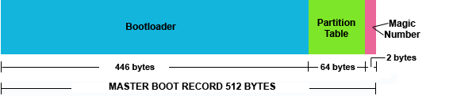
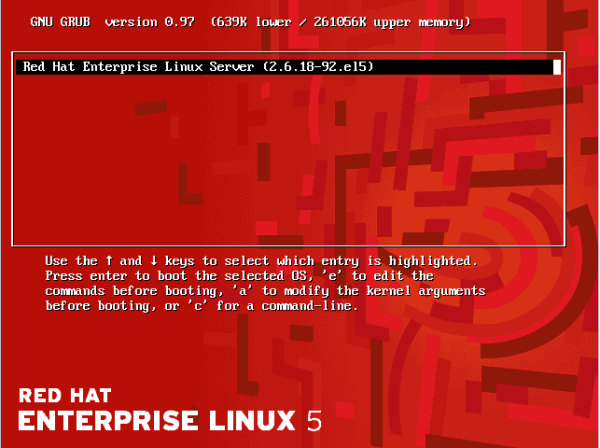
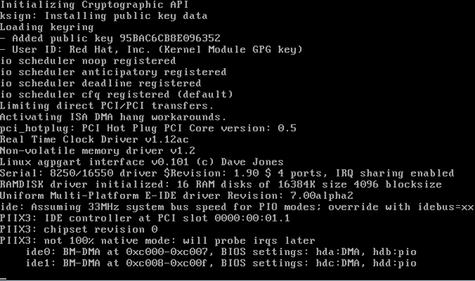
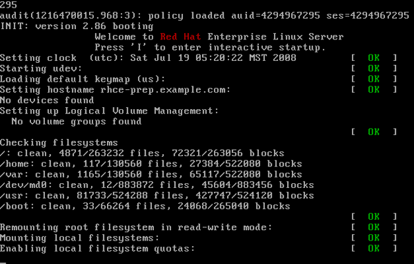

...making Linux just a little more fun!
Rick Moen [rick at linuxmafia.com]
[[[ I've clipped out the offending message and tossed it into the /misc directory as http://linuxgazette.net/156/misc/lg/undeliverable if you actually are curious about what "these things" look like. -- Kat ]]]
Subscribers might (or might not) be curious about what I do with these things. Basically, Faber had it about right: I do indeed decide where to aim the Blacklist of Doom and fire freely.
In this case, IP address 207.65.4.4 (rex2.isdn.net), running proprietary MTA Communigate Pro, confessed that it had received (forged) mail from IP address 71.75.8.158, which at the time was falsely claiming to be "lists.linuxgazette.net" and conveying mail from tag@lists.linuxgazette.net to downstream recipient chet@multipro.com.
And that incompetently run MTA, on rex2.isdn.net, believed that particular barefaced lie -- and thus decided to send "back" to the forged, falsified sender address, tag@lists.linuxgazette.net, the scintillating intelligence that the illustrious Mr. Chet is over quota and sadly cannot accept "our" mail.
This is incompetent mail administration in part because rex2.isdn.net has no excuse for believing that lie: Merely conducting the most basic of checks of our SPF record would have revealed that 71.75.8.158 is not an authorised MX for lists.linuxgazette.net. Also, rex2 is ethically obliged to be particularly careful about what mail it accepts for redelivery to (e.g.) downstream hosts like multipro.com's MXes (mail exchangers), specifically because of the risk of "backscatter spam" of this sort.
In short, I've blackholed rex2.isdn.net completely on lists.linuxgazette.net (for all SMTP purposes), which is indeed hard-assed but ensures that it will not backscatter-spam us again. If there are any legitimate users on that mail host, they lose.
(As a reminder, TAG is particularly vulnerable to spam, because its posting model has to date prevented it from being set so that all mail from non-subscribed addresses is held for listadmin vetting. All other mailing lists I run duck that bullet, and are for all practical purposes spam-free.)
kuldeep singh [kuldeep_1985_ec at yahoo.co.in]
[[[ I suspect this is "please do my homework", but as it wasn't responded to last month, I'm tossing it into the "Still Searching" pile. (Unsurprisingly, it was sent as html, adding to my annoyance.) -- Kat ]]]
hi
I am a student from IIT Delhi, India. I am working on a project in which i need to establish multilink PPP connection between two embedded ARM +board. The OS is linux(Debian).
Can u please tell me how to establish this mppp connection (configuring in Linux).
Please reply soon.
Thanks
Kuldeep
IIT Delhi
J.Bakshi [j.bakshi at icmail.net]
Hello friends,
I have a remote suse server where I have a shell script and in that I have the configuration of iptables firewall. so, after executing the script I get my firewall ready. I could also write a deamon there which can execute the script after booting the linux.
I wounder if there is anything in debian to do that. When checking iptables I have found the following
iptables iptables-apply iptables-multi iptables-restore iptables-save iptables-xm
shall I just write a deamon which will then call the configuration file ? or there is already something in debian which I have missed ? Kindly suggest. Thanks
Chris Bannister [mockingbird at earthlight.co.nz]
On Mon, Oct 27, 2008 at 06:38:09PM -0400, Faber J. Fedor wrote:
> On my Macbook, I boot off a CDROM by a) putting the CD into the drive, > b) rebooting the machine, c) and hold down the 'c' key during the > boot process.
Do they still eject the cd if you try and boot off them or just ignore it?
--
Chris.
======
I contend that we are both atheists. I just believe in one fewer god
than you do. When you understand why you dismiss all the other
possible gods, you will understand why I dismiss yours.
-- Stephen F Roberts
J.Bakshi [j.bakshi at icmail.net]
Dear list,
I generally worked with Linux terminal. Frequently I have to do "rm" to delete files/folders which are not required any more. And this actually raised a oquestion in mind. what to do if some point of time I need a file/foldr which has been already deleted before few min. ago. I have googled a lot but have not found any open source tools which can recover the deleted ones. testdisk is there but it is totally different. there are some commercial GUI based tools available but I am looking for a CLI tool or technique which practically recover the deleted file/folder.
Hope some one can enlighten me. Thanks
[ Thread continues here (18 messages/31.21kB) ]
J.Bakshi [j.bakshi at icmail.net]
Dear list,
I don't need kdm to run as a service because most of the time I access this linux box remotely. Only when I am at home then I need the desktop. That's why I have disabled the kdm. But after that "startx" gives an error
Module Loader present
Markers: (--) probed, (**) from config file, (==) default setting,
(++) from command line, (!!) notice, (II) informational,
(WW) warning, (EE) error, (NI) not implemented, (??) unknown.
(==) Log file: "/var/log/Xorg.0.log", Time: Sun Oct 5 21:15:35 2008
(==) Using config file: "/etc/X11/xorg.conf"
(II) Module "i2c" already built-in
(II) Module "ddc" already built-in
(II) Module "ramdac" already built-in
waiting for X server to shut down FreeFontPath:
FPE "/usr/share/fonts/X11/misc"
refcount is 2, should be 1; fixing.
Every time the same error from startx. If I start the kdm no problem at all !!
Kindly CC to me
[ Thread continues here (10 messages/19.31kB) ]
J.Bakshi [j.bakshi at icmail.net]
Hello List,
I have tried to install the gdeskcal with its dependency "python python-central python-gtk2 python-numeric python-xml" in lenny and In return apt asking to install 170 packages with gnome gnome desktop and some other tools which really don't have any connection with gdeskcal !!! I did not see this in sarge. What is going on ?
I like to install gdeskcal with icewm. Why 170 pacakes ??
Thanks
[ Thread continues here (17 messages/18.20kB) ]
J.Bakshi [j.bakshi at icmail.net]
Hello list,
Once I tried Mandrake linux at my friend's PC. I have never seen that type of console in any other distro ( though I worked with redhat, debian, suse and puppy). The fonts are not so big which I see in debian or RH; they are neat and clean. more over at the bottom of the console there was a logo of mandrake !! Could any one suggest or give me any clue so that I can modify my present console to that fancy one ?
thanks
[ Thread continues here (2 messages/1.13kB) ]
bill jones [userwilber2003 at yahoo.com]
[[[ Mr. Jones sent this in as html mail, and also without much spacing in his punctuation. For ease of the readership, I've done some minor editing on his content. -- Kat ]]]
Hello.
I need some help and I'm hoping you can do it. Ok,here goes. I traded a guy at work for an Apple laptop with Linux installed. He got it from a guy who didn't have the Root password. How nice! I've tried to
+ reinstall Opensuse 10.2 to gain controll of the laptop,and it won't autorun. I made sure the discs were in ISO form. When the disc is in the cdrom
+ it shows how big the disc is but it doesn't show how much space is available. The memory shows that there's' 2.34mb avaliable. I'm very new at this
+ Linux and don't really understand it yet. So, do you think you'ins' can help me?
ON Opensuse site it said if it didn't start auto to open Bios setup and go from ther. I'm not sure how to do that ,or where to type in Bios. Any help would be greatly welcomed and appreaciated!
Thank-you,
-- Bill Jones userwilber2003@yahoo.com
[ Thread continues here (4 messages/5.08kB) ]
J.Bakshi [j.bakshi at icmail.net]
Dear list,
I did a net installation of lenny. I have not found xmms and I think the source is mising from the configuration. Here is my sources.list
deb http://ftp.de.debian.org/debian lenny main contrib non-free deb http://security.debian.org/ lenny/updates main contrib non-free deb-src http://security.debian.org/ lenny/updates main contrin non-free
will it need additional source to have the multimedia ?
Thanks
[ Thread continues here (10 messages/17.23kB) ]
J.Bakshi [j.bakshi at icmail.net]
Dear all,
I am a debian user but once I got a chance to test Mandrake Linux and there I saw first time the magic of Linux console. First of all; the Mandrake console was neat and clean with high resolution support and Colourful text. More over a transparent Logo was there at the buttom of the screen. It was really nice looking and at the same time disclousing the fact what power is inbuilt inside Linux console!!
I compiled the kernel ( in my debian box ) with Fb and vesa support. Then I add the vga=791 at the kernel configuration line at grub.cfg and now I get high resolution screen with linux logo support at booting. But There are so many things still unresolved and I'll be grateful to the list if some one atlest show me the right direction
1> How can I test what max. resolution my monitor can suport with a command ?
2> High resolution can be opted by SVGA, VGA or fbdevice. What are the difference between these and how can I know which one is best for my Display card ?
3> How to get colorful text; like the text in knoppix during booting ?
4> and finally how can I get the tranparent logo at the butom of my console ?
A no. of question  may be these are already there in some document in the
system itself. But currently I have no clue and it would be great if Someone
atleast show me the direction following which I can be able to resolved all
these myself.
may be these are already there in some document in the
system itself. But currently I have no clue and it would be great if Someone
atleast show me the direction following which I can be able to resolved all
these myself.
Thanks
[ Thread continues here (9 messages/12.03kB) ]
Hunt, Melissa [mhunt at Dewberry.com]
Im new to xandros linux...never used any linux operating system before...
How do I run/install downloaded programs using linux?
Wind0ws usually opts for an auto run or save. It seems linux wants to save. So once I have it saved (which I do) how do I actually run or install that downloaded program?
Thanks...
Melissa-Hope Hunt
-- Computer Aided Drafter Dewberry 200 Broadacres Drive, 4th Floor Bloomfield, NJ 07003-3154 973.338.9100 ext. 3116 973.338.5860 fax www.dewberry.com <http://www.dewberry.com>
[ Thread continues here (7 messages/6.35kB) ]
Rick Moen [rick at linuxmafia.com]
Hi, J.Bakshi. This note is to advise you that your choice of ISP is causing your mail to be interpreted upon receipt as suspect, when automatically parsed by spam-detection software. My SMTP software keeps kicking your mail addressed to this mailing list into an administrative queue, to verify that it's not spam. Even though I've whitelisted _you personally_, your ISP's IP address keeps failing several tests used within Spamassassin. Those are:
RCVD_IN_SORBS: This is fairly serious. Your ISP's SMTP server IP address (63.223.93.2) is in the SORBS (Spam and Open-Relay Blocking System) antispam blocklist, which means it's been extensively used for spamming activity (not by you).
RCVD_IN_SORBS_WEB: This is also fairly serious. That same IP is also in a separate SORBS blocklist of sites that are known to have exploitable vulnerability (e.g., FormMail scripts) that are widely abused by spammers to send mass-mail spam.
FORGED_RCVD_HELO: This refers to the fact that your ISP sends out a mistaken/malformed greeting string during its SMTP delivery attempts. In this case, IP address 63.223.93.2 (firewall.wahju.com) is sending a greeting string claiming it's "icsmail.net". Doing so violates mailing list technical standards and makes your ISP's SMTP host look like a spammer haven.
RCVD_IN_XBL: This is really serious. This means your ISP's SMTP server IP address is also in the Spamhaus XBL blocklist, described as "wholly incorporat[ing] data from two highly-trusted DNSBL sources, with tweaks by Spamhaus to maximise the data efficiency and lower False Positives. The main components are the CBL (Composite Block List) from cbl.abuseat.org, and the NJABL Open Proxy IPs list from www.njabl.org". Essentially, this means your ISP's mail server has been verified to be repeatedly used by spammers to a high degree of certainty.
I cannot really advise you, except to say that, unless/until some of the above facts about your ISP -- not your fault and not under your personal control -- change radically, you are likely to have significant problems with software classifying your mail as probable spam. Some users in similar situations have found it best to change providers.
[ Thread continues here (6 messages/9.36kB) ]
[ In reference to "Build a Six-headed, Six-user Linux System" in LG#124 ]
Chad Van Maele [chadvm at gmail.com]
I've tried and tried and I can't get this to work, I'm using Debian/etch, xorg 7.3, and xdm. When try to start the X server manually, seat0 works ok, but I've had varying success with seat1, sometimes it starts, but not on the same vt, so monitor0 goes black, or it will start on the same vt, but no window manager will start, the mouse and keyboard work ok though. I've looked at an exhaustive amount of other howto's, but most of them are outdated, saying I need Xephyr to do it. I've gone to irc.freenode.net and went to #xorg, but no one there even talks at all, just a bunch of IRC trolls I guess. I don't know where to look for help anymore, so I'm writing this email. I don't want to be a bother, but I just don't know what else to do. Thanks.
-- Chad Van Maele http://www.tshirthell.com/store/link.php?id=RGlvbml4
[ Thread continues here (2 messages/2.20kB) ]
[ In reference to "XKCD" in LG#155 ]
Jimmy O'Regan [joregan at gmail.com]
XKCD Improving the Internet ... Yet Again http://idle.slashdot.org/article.pl?sid=08/10/09/1618235&from=rss
The real story is here: http://www.networkworld.com/community/node/33807
[ In reference to "2-Cent Tips" in LG#155 ]
Jimmy O'Regan [joregan at gmail.com]
[[[ This is specifically a followup to the thread http://linuxgazette.net/155/misc/lg/two_cent_tip__download_whole_directory_as_zip_file.html -- Kat ]]]
2008/9/16 Silas S. Brown <ssb22@cam.ac.uk>:
> > You shuld be able to use Gradint as well if you > can find someone to record the words and > phrases for you.
I wanted to mention this at the time, but I couldn't find the link: http://shtooka.net/ is a project aimed at just this idea - of providing pronunciations of words in various languages.
[ Thread continues here (5 messages/8.93kB) ]
[ In reference to "A Slightly Advanced Introduction to Vim" in LG#152 ]
Eric Deschamps [erdesc at free.fr]
Hi,
I guess there is another error on this document.
In the section "Miscellaneous Commands"
Shift+j (or J) - This will brings up the previous line to the end of the current.
It should be : This brings up the next line to the end of the current, shouldn't it ?
Best Regards,
Eric
[ Thread continues here (2 messages/1.39kB) ]
Jimmy O'Regan [joregan at gmail.com]
[[[ This is clearly the wrong Talkback link, but after some serious searching of the LG archives, I can't find the source anywhere. It may be from some (rare) unpublished recent material. Lacking a better subject line, I've opted to retain the (inaccurate) original it was sent in as. -- Kat ]]]
2008/3/10 Ben Okopnik <ben@linuxgazette.net>:
> Oh, heck - the classic "The spirit is willing, but the flesh is > weak"/"The vodka is good but the meat is rotten" problem is going to be > with us for a long, long time.
Turns out that example is false, according to the MT Book (http://www.essex.ac.uk/linguistics/clmt/MTBook/):
There was/is an MT system which translated The spirit is willing, but the flesh is weak into the Russian equivalent of The vodka is good, but the steak is lousy, and hydraulic ram into the French equivalent of water goat. MT is useless. The `spirit is willing' story is amusing, and it really is a pity that it is not true. However, like most MT `howlers' it is a fabrication. In fact, for the most part, they were in circulation long before any MT system could have produced them (variants of the `spirit is willing' example can be found in the American press as early as 1956, but sadly, there does not seem to have been an MT system in America which could translate from English into Russian until much more recently --- for sound strategic reasons, work in the USA had concentrated on the translation of Russian into English, not the other way round). Of course, there are real MT howlers. Two of the nicest are the translation of French avocat (`advocate', `lawyer' or `barrister') as avocado, and the translation of Les soldats sont dans le café as The soldiers are in the coffee. However, they are not as easy to find as the reader might think, and they certainly do not show that MT is useless.
For our own ins, the previous release of our Catalan-English translator mistranslates 'Fidel Castro' (I requested that 'Faithful Castrate be the release name for 0.8.4, but was unsuccessful); the current versions of en-ca and en-es both mistranslate the Catalan and Spanish versins of 'International Monetary Fund' to something like 'Worldwide Bottom Fund' - which might be more accurate in the current climate, but still - which I fixed last week (you don't need to speak a language to work on MT, but it helps).

|
Contents: |
Please submit your News Bytes items in plain text; other formats may be rejected without reading. (You have been warned!) A one- or two-paragraph summary plus a URL has a much higher chance of being published than an entire press release. Submit items to bytes@linuxgazette.net.
![[lightning bolt]](../gx/bolt.gif) Linux Kernel 2.6.27.2 Launched
Linux Kernel 2.6.27.2 LaunchedVersion 2.6.27.2 of the Linux kernel was released on October 18th, introducing several bug-fixes to the 2.6.27 kernel that added a new file-system (UBIFS, optimized for pure flash-based storage devices), several new drivers, and Xen support for saving and restoring virtual machines,
The full changelog of the release can be found here: http://www.kernel.org/pub/linux/kernel/v2.6/ChangeLog-2.6.27.2.
Mono 2.0 Release - Major Milestone ReachedMono 2.0 was released on October 6th. This very specific release was much awaited by Mono users, and is a major milestone for the Mono project, by offering complete support for Microsoft's .NET 2.0 framework. This gives developers one more alternative for writing portable programs.
More details of the release:
- New controls for Windows.Forms namespace (Tool and Menu bars, DataGridView, and
WebBrowser components are some of those components);
- Runtime performance improved;
- Updates to the C# compiler;
- LINQ and LINQ-to-XML support complete.
Along with other changes.
The full release notes can be found here: http://www.mono-project.com/Release_Notes_Mono_2.0.
Who says Open Source isn't about money?Alan Lord wrote on the Inkscape discussion e-mail list:
This is a great story and Inkscape, along with lots of other FOSS, played its part...
Details on the design of a new Dutch coin at the link here: http://pythonide.blogspot.com/2008/10/how-to-make-money-with-free-software.html .
Away with the keyboards and mice!TAG member Jimmy O'Regan sent in this news item, quoting from http://weblog.infoworld.com/fatalexception/archives/2008/10/microsofts_touc.html
"Most recently, Iron Man's Tony Stark designed CAD models for an entire suit of high-tech combat armor using only his bare hands. So how come we're all still using keyboards and ordinary old mice? InfoWorld's ace reporter Paul Krill was the first to spot a new project from Micr0s0ft Office Labs and Micr0s0ft developer Mike Wasserman that could bring those next-generation UIs one step closer."
The code is released under the MS-PL, which is open source and GPL-compatible:http://www.codeplex.com/touchless It's C#, so it should work with Mono (and if it doesn't, it's only a matter of time before some Mono person makes it work)
The article also mentions this project: http://www.hitl.washington.edu/artoolkit/ which is GPL and already works on Linux.
Which came first, the 3-D printer or the 3-D printer it made?Jimmy O'Regan sent in another fantastic tidbit, this one about a self-replicating open source 3-D printer. "RepRap" stands for Replicating Rapid-prototyper, and it's simply too cool to explain briefly here. Code and specification are available under the GPL. "Not counting nuts and bolts RepRap can make 60% of its parts; the other parts are designed to be cheaply available everywhere." They use Art of Illusion ( http://www.artofillusion.org/ ) to design models.
Version 2.0 is being designed, with a goal of being able to reproduce its own electronics, too. They've also had success with plywood http://reprap.org/bin/view/Main/PlywoodRepRaps
Go directly to the RepRap home page here: http://reprap.org/bin/view/Main/WebHome
For the past 20 years LISA has been the focal point for the global community of system and network administrators. This year LISA continues that tradition, featuring innovative tools and techniques essential for your professional and technical development. LISA is the premier forum for presenting new research in system administration. We selected papers showcasing state-of-the-art work on topics including configuration management, parallel systems deployment, virtualization, and security. Bring your perplexing technical questions to experts at LISA's Guru Is In sessions; explore the latest commercial innovations at the Vendor Exhibition; benefit from opportunities for peer interaction (a.k.a. the "Hallway Track").

Early registration discounts for LISA '08, taking place November 9–14, 2008, in San Diego, are now available. Register by Friday, October 17, and save up to $300!
Join us at the Paradise Point Resort for this symposium covering the most innovative systems research, including over 20 high-quality papers in areas including OS architecture, cloud computing, and monitoring, as well as a poster session. Don't miss the opportunity to gather with researchers from across the systems community in what has become a premier forum for discussing the design, implementation, and implications of systems software.

Register by November 17 and save $150!
http://www.usenix.org/osdi08/lgbUbuntu 7.04 End of Support on October 19thOn October 19th, Ubuntu 7.04 reaches the end of its support life. Supported for 18 months, from April 19th 2007 to October 19th 2008, this version of the Ubuntu distribution will now stop receiving new security patches and updates.
The only direct update path for users of Ubuntu 7.04 is upgrading to Ubuntu 7.10. Details of the process can be found here: https://help.ubuntu.com/community/GutsyUpgrades.
Red Hat High Performance Computing (HPC) Solution LaunchedRed Hat announced the launch of Red-Hat's HPC Solution, a package of tools, including the operating system, cluster-creation and management tools, and development tools, aimed at creation of an HPC cluster in a single, easy to install package.
Backed up by Red Hat support services, the solution brings creation of such services to a new level. According to Red Hat, "With the Red Hat HPC Solution, making changes to the cluster is a snap. With its elegant and powerful node group and repository manager, you can deploy new updates, patches, and software packaged as kits, or re-image new nodes in minutes with no interruption in uptime. Managing four hundred nodes requires as little effort as managing four nodes".
You can check more details of the solution here: http://www.redhat.com/hpc/
Ubuntu 8.10 Server Focuses on Java, Virtualization, and System Management updatesThe Ubuntu 8.10 Server edition is shipping with several updates, some of then being significant improvements in Virtualization, Java and System Management capabilities.
For virtualization, Ubuntu 8.10 Server comes with a virtual machine builder, allowing the user to create and manage virtual machines via the command line, giving users the option to automate those tasks with simple scripts. It also comes with an updated KVM, allowing more-flexible memory management, including the ability to change a virtual machine's memory amount without the need to reboot it.
By fully supporting Apache Tomcat 6.0 and the Java OpenJDK, Ubuntu 8.10 server also gives developers more options for developing and deploying Java applications.
Ubuntu 8.10 Server also comes with several other improvements, including:
- ClamAV and SpamAssassin in the main repositories, for virus and spam
detection;
- Ability to encrypt private directories;
- Landscape (Canonical's System Management Solution) integration within the
installer;
- Improved RAID support.
More information about Ubuntu 8.10 Server can be found here:
http://www.ubuntu.com/server;
And you can download it here: http://www.ubuntu.com/download;
For more information about Canonical's Landscape, follow this link:
http://www.canonical.com/landscape.
Ubuntu 8.10 To Be Released on October 30thUbuntu's next release, codenamed Intrepid Ibex, will be released on October 30th, and will include several updates, and some new features as well. Some of those features are:
- Ability to install from an USB drive;
- New instant-messaging software;
- Guest Sessions (temporary, secure sessions, used when sharing your computer
with someone else);
- 3g network support;
- Built-in time tracker.
Canonical also teamed up with BBC to ensure most BBC material will be available trough Ubuntu 8.10's default media players.
More information about the release can be found on http://www.ubuntu.com/, and downloads will be available on http://www.ubuntu.com/download.
Debian 4.0r5The fifth revision of the popular Debian 4.0 ("Etch") distribution is available for download, containing several fixes for security problems of the stable release.
The full announcement of the release, including a list of fixes and update instructions, can be found here: http://www.debian.org/News/2008/20081023.
Linux Mint 5 Fluxbox ReleasedLinux Mint announced on October 21th the availability of the Linux Mint 5 "Elyssa", Fluxbox edition, developed to be a lightweight distribution, running the Fluxbox window manager.
New features includes an auto-generated and auto-updated Fluxbox menu, Thunar custom actions, better language and localization support, multimedia compatibility with several pre-installed codecs and plugins, and more.
More details and download links can be found here: http://www.linuxmint.com/blog/?p=404.
Foresight Linux 2.0.5On October 17th, Foresight Linux 2.0.5 was released to the public, being the first stable distribution to feature the latest GNOME, 2.24. The distribution also contains several other cutting-edge updates, including OpenOffice.org 3.0 and X.Org server 1.5.1.
More details about this release and download links can be found on http://www.foresightlinux.org/releases/2-0-5.html.
Java 6 Updated!Sun's Java Standard Edition 6 Update 10's availability was announced. It can be downloaded at http://java.sun.com/javase/downloads/index.jsp. Changes include faster startup for Java applications, new Direct3D capabilities, several bug fixes, and more.
More information about the release can be found here: http://java.sun.com/javase/6/webnotes/6u10.html
Flash Player 10 LaunchedAdobe launched Flash Player 10, with several updates and new features. This update, unlike Flash Player 9, was released on the same day for several platforms, including Linux, Windows, and Mac OS X.
While the release does not seem too important for Flash development on Linux (one of the main new features, the ability to use custom filters and effects, can only be achieved on Windows and Mac OS, as it requires the Adobe Pixel Bender toolkit, that runs only on those platforms), for those who want only to be able to watch Flash clips on Linux, this is still a release worthy of note.
Gnome 2.24GNOME received a new update, this month, and includes several new features along with a long list of improvements and bug fixes.
The new features of this release include:
- Included instant-messaging solution;
- Ekiga 3 for audio/video conferencing;
- Tabs and new ways of viewing files on the file browser;
- New and improved screen resolution controls;
- Support for sound themes;
- Several accessibility updates;
And much, much more.
Full details can be found here: http://library.gnome.org/misc/release-notes/2.24/
VMWare Workstation 6.5 ReleasedVMWare Workstation, the virtualization solution from VMWare, just received a new version, and it's full of new features and bug fixes.
Some of those new features include:
- Support for new 32- and 64-bit operating systems;
- Unity mode (integrates the guest and the host desktops);
- Better internationalization support;
- Easy-install option for Linux and Windows guests;
- Virtual network editor for linux hosts;
- Several performance improvements (including network and USB speed-ups);
- Several new developer tools.
The full release-notes can be found here: http://www.vmware.com/support/ws65/doc/releasenotes_ws65.html
Talkback: Discuss this article with The Answer Gang
![[BIO]](../gx/authors/dokopnik.jpg)
Deividson was born in União da Vitória, PR, Brazil, on 14/04/1984. He became interested in computing when he was still a kid, and started to code when he was 12 years old. He is a graduate in Information Systems and is finishing his specialization in Networks and Web Development. He codes in several languages, including C/C++/C#, PHP, Visual Basic, Object Pascal and others.
Deividson works in Porto União's Town Hall as a Computer Technician, and specializes in Web and Desktop system development, and Database/Network Maintenance.
By Matteo Dell'Omodarme and Giada Valle
The aim of this article is to introduce the GRASS GIS software and to show its basic usage. As with all GIS software, it is quite complex: there is a huge number of features and controls, and non-trivial theoretical information is required even for basic use. Nevertheless, we think that the quick introduction presented here could be of some help for neophyte users who want to master a GIS program.
We chose to devote a large part of this article to practical use of the software, in particular to real data gathering, reprojection of maps, and output of results. The decision is motivated by the fact that it is very difficult (and in some case impossible) to find this information systematically presented on the Net. Conversely, the introduction to the interface and the ancillary theoretical information are touched upon only briefly, because they can be retrieved from many sources (see the section at the end of this document.)
Since there are so many topics to introduce, and since we do not want to sacrifice clarity to brevity, some topics (i.e., climatological map-making, interfacing GRASS with statistical software, etc.) are postponed until another article.
A Geographic Information System (GIS) is software for gathering, storing, managing, and presenting data that are geographically referenced. The characteristic of a GIS is the capability of examining different sets of geo-referenced data and reaching a conclusion about the existing relationship among the data. In other words, a GIS can link information that is difficult to associate by other means.
For example, it is possible to relate some geo-referenced information (e.g., disease foci) with other data (e.g., location of urbanized and rural zones, climatological data). This can reveal new information that can lead to better decisions about attempting to control the disease's spread.
Nowadays, GIS software is used in several scientific fields, including resource management, environmental impact assessment, ecology, archaeology, cartography, and epidemiology.
GISes are normally capable of different types of spatial analysis and geographical feature processing. Some examples:
Geographic Resources Analysis Support System (GRASS) GIS (http://grass.osgeo.org/) is a geographic information system released under the GNU General Public License (GPL). GRASS is being developed for the GNU/Linux, Mac OS/X, and Windows operating systems. GRASS development is split into stable and development branches. The first one is recommended for most users.
GRASS is capable of data management, image processing, graphics production, spatial modeling, and visualization of many types of data. It's an official project of the Open Source Geospatial Foundation (http://www.osgeo.org/).
GRASS was originally developed by the U.S. Army Construction Engineering Research Laboratories (USA-CERL) as a tool for land management and environmental planning by the military. From 1982 to 1995, USA-CERL led the development of GRASS, with the involvement of numerous others, including universities and other federal agencies.
In 1995, the software's development was taken over by a group formed at Baylor University. In this period, the package was ported to Linux. In 1998, Markus Neteler, current project leader, announced the release of GRASS 4.2.1, offering major improvements including a new graphical user interface. In October 1999, the license of the originally public-domain GRASS software was changed to GNU GPL (specifically, starting with GRASS v. 5.0). Users interested in additional historical background can look at http://grass.osgeo.org/devel/grasshist.html.
GRASS has now evolved into a powerful utility, with a wide range of applications. It is currently used in academic institutions and commercial companies around the world, as well as many governmental agencies and environmental consulting companies.
Upon starting GRASS, the user is presented with a Unix shell containing a modified environment supporting execution of GRASS commands (known as modules). Users can also interface with the majority of GRASS modules and capabilities through a graphical user interface (GUI). There are over 200 core GRASS modules included, and over 100 add-on modules contributed by users and offered on the GRASS Web site. The GRASS libraries and core modules are in C, while other modules are in C, Unix shell, Tcl, or other scripting languages.
Data managed by GRASS can be roughly divided into geometric and attribute data. In the first case, there are:
Attribute data are attributes interconnected with the data types mentioned above. For example, a vector layer representing countries boundaries can be associated with data concerning state population, country identification code, etc. Data are usually saved within GIS or in a database system coupled with GIS.
GRASS supports an extensive range of raster and vector formats through binding to GDAL/OGR libraries. GRASS release 6 introduces a new topological 2D/3D vector engine, and support for vector network analysis. Attributes are usually managed in .dbf database files, although other DBMSes can be used. The system is capable of visualizing 3D vector graphics data.
A huge amount of information, documentation, and other resources are available for GRASS. The documentation includes a very useful internal help system, a FAQ list, and a number of textbooks. In addition to the textbooks (http://grass.osgeo.org/gdp/books.php), the GRASS documentation Web page also hosts various user-contributed documentation, such as tutorials and courses (http://grass.osgeo.org/gdp/tutorials.php) as well as manuals (http://grass.osgeo.org/gdp/manuals.php).
Other GIS software is available, both open source and proprietary. Among the former, GRASS is the most widely used, especially for academic research. As for commercial products, the ArcInfo workstation from ESRI and Mapinfo Professional from PitneyBowes Mapinfo are the market leaders. The license price is 9,000-15,000 USD (depending on features) for ArcInfo and about 1,700 USD for Mapinfo. Both programs have been developed for Windows, GNU/Linux, and Unix operating systems but lack support for Mac OS/X.
The latest version can be found at the GRASS download page. Here, you can find precompiled binaries for several platforms as well as the source code.
Installation from source requires at least two extra libraries: PROJ4 for management of projections and GDAL/OGR for reading and writing various GIS data formats. These libraries must be installed in the right order, before installing GRASS.
The first step is to download PROJ4 from http://trac.osgeo.org/proj/. The latest version of the library is 4.6.0. The installation procedure is straightforward:
tar zxf proj-4.6.0.tar.gz cd proj-4.6.0/ ./configure make make install
This library allows management of map projections, which are any method used in cartography to represent the two-dimensional curved surface of the Earth or another body on a plane. Flat maps could not exist without map projections, because a sphere cannot be laid flat over a plane without distortions. To run a GIS package, some details about this topic are required. Some basic elements are given in the following:
The second step is installing the GDAL/OGR library combination. The latest version (1.5.2) can be downloaded from http://download.osgeo.org/gdal. The install procedure is, again, the usual one:
tar zxf gdal-1.5.2.tar.gz cd gdal-1.5.2/ ./configure make make install
GDAL is a translator library for raster geospatial data, while the OGR library (which lives within the GDAL source tree) provides a similar capability for simple-features vector data. These libraries allow import and exchange of files between different GIS programs.
Finally, GRASS can be installed. The last stable version of the software (currently 6.2.3) is located at the GRASS download page. The software is installed by the now-familiar method:
tar zxf grass-6.2.3.tar.gz cd grass-6.2.3/ ./configure make make install
As a first step, the user is required to create a directory (GRASS database) that will hold the GRASS data. A usual choice is to create a directory named 'GRASS' (or 'grassdata') in the user's HOME directory.
A subdirectory tree, named location, is automatically created in the GRASS database for each defined project region. All project data are saved in the location subdirectory. The location can be further subdivided into map subdirectories called mapsets.
All general information about the project area is stored within the location in the PERMANENT mapset, which is automatically generated by GRASS. A user can create one or several mapsets for a given location. They can have the extent of the whole project or smaller. This characteristic makes it possible to have several users working on one project at the same time, without the risk of destroying each other's data. Other information about the tree structure of a location can be found, for example, at http://www.gdf-hannover.de/lit_html/grass60_v1.2_en/node10.html.
GRASS can then be started by typing the following at the shell prompt:
grass62
The program opens a modified shell and displays the following text:
WELCOME TO GRASS Version 6.2.3 2007
1) Have at your side all available GRASS tutorials
2) When working on your location, the following materials
are extremely useful:
- A topo map of your area
- Current catalog of available computer maps
3) Check the GRASS Web pages for feedback mailing lists and more:
http://grass.itc.it/
http://grass.ibiblio.edu/
Hit RETURN to continue
After the user presses Enter, GRASS displays a graphical window from which one can choose the location and the mapset to open, as in the following figure:

From this window, one can read two important pieces of data:
Besides choosing a defined location, it is also possible to create a new location in three different ways. These methods differ in the amounts of information required of the user. The simplest case occurs when data about the location are self-contained in the imported map (geo-referenced file); in these cases, no other information is needed.
The definition of a new location requires input (directly by the user or indirectly from a map) of the following information:
These settings are critical for correct display and management of the location. Therefore, before going further, it's worthwhile to introduce some theoretical information about projections and coordinate systems.
In a GIS, the information is stored with coordinates; therefore, a coordinate system has to be specified. For geographical data, the geographic system (the well known latitude and longitude) or a geodetic projection like Universal Transverse Mercator (UTM) or Gauss-Krüger are the usual choices.
The UTM coordinate system is a grid-based method of specifying locations on the surface of the Earth. It differs from the traditional method of latitude and longitude in several respects. The Gauss-Krüger system is similar to the UTM system with only small differences. More details on these coordinate systems can be found in further readings listed in the final section.
To optimize the projection from the geoid into a flat map, the Earth is approximated by an ellipsoid.
Different projections are used because each projection is particularly appropriate for certain uses or areas. For example, a projection that accurately represents the shapes of the continents will distort their relative sizes. GRASS offers predefined projections, as well as the geographic system and the possibility to define a geodetic projection by yourself. In this last case, the projection type, the ellipsoid and the datum (a reference from which measurements are made) for referencing the ellipsoid have to be specified.
The best way to appreciate the functionality of GRASS is to see it in action on a real case-study. As a first step, let us introduce the usual question that worries every new user: "Well, I have just installed this wonderful software, and I have some geo-referenced data to analyze and relate to geophysical characteristics of my research area. But what about geophysical maps? Where can I get them? What kinds of thematic data are available for my region of interest?"
The answer obviously depends on the analysis you have planned, and on the geographic region of interest. Some frequently desired thematic maps are:
Let us state clearly that, if you are interested in a very specific and very high resolution map, your only hope is to find this resource for a fee (usually substantially high) from a local agency. Sometimes, these data are distributed in electronic format; otherwise, you have to scan them from the hardcopy, yourself.
If you are instead interested in large-region medium resolution (30 - 100 m) maps, the Net hosts several amazing resources you should use. In the following section, we describe Net sources where this information is available for free download, and how to import them into GRASS.
The Shuttle Radar Topography Mission (SRTM) obtained elevation data on a near-global scale to generate the most complete high-resolution digital topographic database of Earth. SRTM consisted of a specially modified radar system flown onboard the Space Shuttle Endeavor during an 11-day mission in February of 2000. The SRTM data are available as 3 arc second (90m resolution). 1 arc second data are available for US. The Global Land Cover Facility provides free access to the data (http://glcfapp.umiacs.umd.edu:8080/esdi/).) The data contains "holes" where water or heavy shadow prevented the evaluation of elevation.
In the following example we show how to obtain elevation data for Tuscany (Central Italy), where we currently live.
Data gathering starts by connecting to the Global Land Cover Facility Web page. In the page, the three ways in which you can access the data (Map Search, Path/Row Search, Product Search) are displayed. Let us choose the first, Map search: the user must choose the desired product in the left panel and select the world region of interest (map on the right). Since we are interested in elevation data, we can choose one among the four available options. Note that GTOPO30 is a global digital elevation model with a horizontal grid spacing of 30 arc seconds, so about ten times less accurate than SRTM data. The first two options are different ways to access the SRTM dataset: the first one allows download of tiles of 1 degree square, while the second accesses WRS-2 tiles to approximate Landsat scenes, which we will introduce in the next paragraph. For reasons that will become clear, we choose to select this second option.
Now, we have to select the geographic region of interest, by clicking on the place panel, just above the world map. In the displayed text box type "Toscana, Italy" and press Enter. (In general, you type "Location, State".) You should then see a page similar to the one displayed in the figure.

There are 35 maps available in the selection. The next step is to select the ones of interest. Having pressed the button "Preview & Download", the selection window is displayed. It looks like the figure below:

The screen is divided into two zones. In the lower one available maps are listed, with their associated information. In particular, you can see the type of data (GeoTIFF format, a widely used raster format), the status (unfinished, unfilled, finished-a, and finished-b in ascending order of processing level and of our choice). In the third column, there are data which allow the identification of path/row attributes, used for Landsat satellite data. The user can select a map by clicking on its ID (first column). In the upper area, information about the selected map is shown. In the right part, the user can check which zone is covered by the map. This picture can guide the selection of really interesting maps. After identification of a desired map, the user should press the download button, and download the .tif.gz file from the window that will open.
At the end of the scan, you will find that only four maps are required for download: ID 180-332 (path/row: 191/030), ID 180-364 (192/029), ID 180-365 (192/030), and ID 180-408 (193/029). These files can be saved in a directory, e.g., $HOME/SRTM, and uncompressed.
GeoTIFF files incorporate information about the coordinate system, the projection, and the datum used for their georeferencing. In this way, it is possible to use them to define a new GRASS location, and subsequently import them into the software.
The process is a little tedious. From the start page of GRASS (displayed in the first figure of this article), define a new location by pressing the button "Georeferenced file". In the window that will open, insert the name of the new location (e.g., "tuscany"), and, in the last one, select the path to one of the four downloaded files (e.g., SRTM_ffB03_p192r029.tif). End the location definition by pressing "Define location". GRASS generates the tree for the new location, and displays a warning requesting to close the program.
At the restart, you will be able to see your first new generated location!
Select the location tuscany, and the mapset PERMANENT, then click on "Enter GRASS". The shell will display the following greeting message:
Welcome to GRASS 6.2.3 (2007) GRASS homepage: http://grass.itc.it/ This version running thru: TC Shell (/bin/tcsh) Help is available with the command: g.manual -i See the licence terms with: g.version -c If required, restart the graphical user interface with: gis.m & When ready to quit enter: exit Mapset <PERMANENT> in Location <tuscany> GRASS 6.2.3 >
Besides that, three more windows will open: the GUI (window GRASS
6.2.3 GIS Manager), the output window which will host the output of
all commands issued by means of GUI, and the map display window.
At this point, the Tuscany location is created, but it hosts no
data. Importation of the four downloaded maps can be performed either
by shell command or by GUI. We illustrate first this second approach,
since it will also show the shell command associated with the GUI
procedure.
From the GUI menu bar, select File / Import / Raster map / Multiple formats using GDAL. Fill in the form that will open, as in the following figure:

The only required fields are the name of input file and the output name, i.e., the internal name GRASS associates to this map. The box "Extend location extents based on new datasat" will extend the location to encompass the imported map.
In the window's last line, the shell command associated with the import operation gets displayed. Its structure is really simple, and makes it faster to import the other maps from the shell. At the shell prompt, insert these commands:
r.in.gdal -e input=/home/matt/SRTM/SRTM_ffB03_p192r030.tif output=192_030 r.in.gdal -e input=/home/matt/SRTM/SRTM_ffB03_p193r029.tif output=193_029
Unfortunately, trying to import the fourth map, you receive an error:
r.in.gdal -e input=/home/matt/SRTM/SRTM_ffB03_p191r030.tif output=191_030 ERROR: Projection of dataset does not appear to match current location.
What is happening? The answer is simple, as is the solution. The projection information associated with this map is different from the those of the three imported maps. The simpler solution is to import the map in a new location (say, "tuscany2"), which will be created ad-hoc, and then reproject the data in the current location. The first step is accomplished by adding a location parameter to r.in.gdal:
r.in.gdal -e input=/home/matt/SRTM/SRTM_ffB03_p191r030.tif output=191_030 location=tuscany2
Since a map's projection does not extend the region boundaries on the fly, you have to be certain that your region is large enough to contain the projected map. In this case, this is false, because the fourth map is partially outside the east boundary. You have to manually adjust this boundary with the command g.region (Config / Region / Change region settings from GUI), and then reproject (Raster / Develop map / Reproject raster from other location from GUI).
Which value has to be set as the east boundary? To make an educated guess, it is better to look at the coordinates of one of the imported maps. You can do it by setting the boundaries of the location to match one of the maps and then extrapolate where the fourth map will be located. For example:
g.region rast=192_029 g.region -p
The first command sets the location's boundaries to those of map 192_029. The second one queries all of the location's parameters; from its output, we can learn several things, such as coordinate system, projection, datum, and coordinates of the boundaries (Config / Region / Display region settings from GUI):
projection: 1 (UTM) zone: 32 datum: wgs84 ellipsoid: a=6378137 es=0.00669437999014138 north: 5065399.56462278 south: 4821139.56462278 west: 576236.63839707 east: 828866.63839707 nsres: 90 ewres: 90 rows: 2714 cols: 2807 cells: 7618198
In the output above, the measures are in meters. Now it is possible to set the eastern boundary:
g.region e=968866
And reproject the map in the current location:
r.proj input=191_030 location=tuscany2 output=191_030 method=nearest
The syntax of r.proj is self explanatory. The option method chose the interpolation algorithm to be used. (Note: if you set an incorrect east boundary, and you have to reproject the map, you must add the flag --overwrite at the end of command r.proj.)
It is time to see some output from GRASS! Let us display one of the
imported maps, say, 192_029. This is done by using the GUI and pressing
the "Add raster layer" button  .
.
A new empty raster layer is then added for visualization in the upper part of the GUI window. By clicking on the name of the layer, you cause the lower part of the window to display a form. Here, you can define which map is associated with the layer. Press on the Base map button, and select the map from the list that is then shown. At the end of the procedure, the GUI should look like this:

You should now admire the results of your work. In the Map display
window, press the "Display active layer" button (the first one). The window
will probably remain empty. In this case, we have to set the zoom of the
displaying window to the one of the region boundaries (which we set in the
previous paragraph). You should press on the button "Zoom to..."  , and
select the option "Zoom to current region" as shown in the figure:
, and
select the option "Zoom to current region" as shown in the figure:

The displayed map should look almost red, with the exception of a few
yellow areas, which correspond to the no-data zones. A useful instrument
available from the Map Display window is the query button  .
Select it and then press over the map; the value associated to the cell is
shown in the output window. You will discover that, for example, no-data
areas are represented by value -32768.
.
Select it and then press over the map; the value associated to the cell is
shown in the output window. You will discover that, for example, no-data
areas are represented by value -32768.
Now it's map-cleaning time! We have to patch the four maps to obtain a new composite map. Before that, we have to clean up the maps. In fact, GRASS expects that no data zones will be identified by a NULL value, while, as we know, SRTM maps identifies no-data areas with the code -32768. The following commands correct this problem (Raster / Develop map / Manage null values from GUI):
r.null map=191_030 setnull=-32768 r.null map=192_029 setnull=-32768 r.null map=192_030 setnull=-32768 r.null map=193_029 setnull=-32768
The next step is definition of the correct location boundaries. GRASS can make boundaries from a series of maps. We use this characteristic by issuing the command:
g.region rast=191_030,192_029,192_030,193_029
The resulting boundaries just encompass the four maps.
As our last step, we can merge the maps, and define an appropriate colormap:
r.patch in=191_030,192_029,192_030,193_029 output=elev r.colors map=elev rules=srtm
The command r.patch (Raster / Overlay maps / Patch maps from GUI) creates a new map, named elev, by merging the four existing ones, while r.colors (Raster / Manage map colors / Set colors to predefined color tables from GUI) defines a colormap using an appropriate predefined ruleset (srtm).
To correctly visualize the map, we have to restart GRASS after having closed the session by entering exit at the shell prompt, and closing the window manager. After having restarted the software, we can display the final result of our work: repeat the procedure used for displaying a raster layer and select the map elev. The map should look like this one:

If the result is satisfactory, you can delete the four small maps. From the GUI, the path is "File / Manage maps and volumes / Remove maps" and fill the raster field with the name of the maps to delete. From the shell, type:
g.remove rast=191_030,192_029,192_030,193_029
At the end of this section, we have created an elevation map for the Central Italy area. We will later extract from it the data related to the Tuscany region, and discard the rest.
As a final note, since the coverage of SRTM data is worldwide, the procedure can be repeated for any location.
Landsat-7 is a satellite launched on April 1999. It has sun-synchronous, near-polar orbit that allows it to record the surface of the Earth in a pattern of overlapping 185 km swaths, completing one scan every 233 orbits. The pattern is catalogued as a tiled global grid of 233 paths and 248 rows in the so called Worldwide Referencing System (WRS). We have seen an example of this reference system when downloading SRTM data.
The satellite is equipped with an instrument called the Enhanced Thematic Mapper (ETM+), a multi-spectral radiometric sensor. The sensor records eight bands of data with varying spectral and spatial resolutions (30 m spatial resolution for red, green, blue, near infrared, and two bands of medium infrared; 60 m for thermal infrared; and a 15 m panchromatic band). A list of the bands with their spanned wavelength (in micrometers) is given below:
Landsat data are available from many sources. During April 2008, all data gathered by the satellite were released into the public domain, so it is possible to download scenes acquired in different months and different years. (See http://landsat.usgs.gov/products_data_at_no_charge.php for details.) We will show here a simpler method of download, limited at one dataset acquired in the years 2000-2001, available at the Global Land Cover Facility Web page. Data gathering procedure is identical to that described in the previous section. The user must select the right product by checking the ETM+ box in the interface shown in second figure of this document.
The result should be similar to the figure below:

The same path/row maps downloaded for elevation data are required; this correspondence greatly accelerates the user choice. In this case, the map IDs are: ID 036-387, ID 036-429, ID 036-430, and ID 036-128.
By pressing the download button, you can see that the data are available as a set of eight GeoTIFF files (one for each ETM+ band). They are much bigger than SRTM data, since the resolution is about three times as great. You can download whatever band you desire.
Landsat data can be used to assess the type, extent, and condition of vegetation over a region, or vegetative change over time. These studies require that a vegetative index be calculated from sets of remotely-sensed data. The most widely used index is the Normalized Difference Vegetative Index (NDVI). The NDVI is calculated as a ratio between measured reflectivity in the red and near-infrared portions of the electromagnetic spectrum. These two spectral bands are chosen because they are affected by the absorption of chlorophyll in leafy green vegetation and by the density of the green vegetation on the surface. Moreover, in red and near-infrared bands, the contrast between vegetation and soil is at a maximum.
ETM+ bands 3 and 4 provide red and near-infrared measurements, and therefore can be used to generate NDVI data sets with the following formula:
NDVI = (Band 4 - Band 3) / (Band 4 + Band 3)
The NDVI equation produces values in the range of -1.0 to 1.0. Vegetated areas will typically have values greater than zero, and negative values indicate non-vegetated surface features such as barren, water, ice, snow, or clouds. NDVI value are usually scaled for display, as is the following equation:
Scaled NDVI = 100 (NDVI + 1)
To evaluate the NDVI index for Tuscany, we have to download bands 3 and 4. These files can be saved in a directory, say, $HOME/Landsat, and uncompressed.
In order to preserve the projection values of Landsat data, the data can then be imported in a new location, e.g., landsat, in order to preserve the projection values of Landsat data. As shown in the preceding section, the command (dataset 193/29, band 4) is:
r.in.gdal -e input=/home/matt/GIS/Landsat/p193r029_7t20010801_z32_nn40.tif output=193_29_4 location=landsat
Restart GRASS, enter the new defined location, mapset PERMANENT, and finish the import:
r.in.gdal -e input=/home/matt/GIS/Landsat/p193r029_7t20010801_z32_nn30.tif output=193_29_3 r.in.gdal -e input=/home/matt/GIS/Landsat/p192r029_7t20000620_z32_nn40.tif output=192_29_4 r.in.gdal -e input=/home/matt/GIS/Landsat/p192r029_7t20000620_z32_nn30.tif output=192_29_3 r.in.gdal -e input=/home/matt/GIS/Landsat/p192r030_7t20000620_z32_nn40.tif output=192_30_4 r.in.gdal -e input=/home/matt/GIS/Landsat/p192r030_7t20000620_z32_nn30.tif output=192_30_3
As seen previously, map 191/30 has a different projection, so you have to read that map in a new location (one for each map), extend the region boundaries, and reproject the maps in the current location:
r.in.gdal -e input=/home/matt/GIS/Landsat/p191r030_7t20010803_z33_nn40.tif output=191_30_4 location=landsat2 r.in.gdal -e input=/home/matt/GIS/Landsat/p191r030_7t20010803_z33_nn30.tif output=191_30_3 location=landsat2b g.region e=968866 r.proj input=191_30_4 location=landsat2 output=191_30_4 method=nearest r.proj input=191_30_3 location=landsat2b output=191_30_3 method=nearest
As a last step, we can patch the maps together. Since, in this case, null values are represented by zeroes we can skip the r.null call by adding a -z flag to r.patch:
r.patch -z in=192_29_4,192_30_4,193_29_4,191_30_4 output=Landsat_B4 r.patch -z in=192_29_3,192_30_3,193_29_3,191_30_3 output=Landsat_B3
Now, all the elements for NDVI calculation are on hand. It is time to learn how to make a new map starting from existing ones!
The best approach is to use the shell command r.mapcalc:
r.mapcalc "NDVI=(float(Landsat_B4 - Landsat_B3) / (Landsat_B4 + Landsat_B3) + 1)*100"
To obtain a floating point division (the Landsat maps are integer maps), the float function is required. The command makes a new map, called NDVI, by operating, cell by cell, on the values in maps Landsat_B3 and Landsat_B4.
Finally, you should reproject the NDVI map into the tuscany location. To do that, exit from GRASS session, restart the program, and login into the tuscany location. Then issue the command:
r.proj input=NDVI location=landsat output=NDVI
If no problem arises, you will have two raster maps in this location. To recover disk space, all other locations can be erased. This can be done by exiting GRASS, changing directory to $HOME/GRASS, and deleting the directories tuscany2, landsat, landsat2, and landsat2b. The resulting map will be shown in the next section, once having learned how to "mask" it in order to show only the pixels of Tuscany.
As for SRTM data, Landsat data also is worldwide, so you can repeat the procedure for any location on the Earth.
States', districts' and municipalities' boundaries can be retrieved from several sources, depending on the region of interest. In the case of Italian regions, for example, these are available from the ISTAT Web site (in Italian). The file of interest (regioni) can be downloaded from the right panel. This file contains Italy's regional boundaries.
Download the file into a new directory, e.g., $HOME/IT, then unzip it. The content of the archive consists of several files, one of which is a .shp file, a widely used vector type of data.
To read this type of data into GRASS, proceed in this way. Start GRASS in the tuscany location, then issue the command (File / Import / Vector map / Various formats using OGR from GUI):
v.in.ogr -e dsn=/home/matt/IT/reg2001_s.shp output=reg_boundaries min_area=0.0001 snap=-1 location=italy_reg
The import requires the specification of a datum transformation parameter. At the prompt, you can select parameter 8, valid for whole European area. At the end, you will have a new location, named italy_reg, which will contain a vector map named reg_boundaries.
Now, logout from the GRASS session and restart in the newly created location. The acquired vector map contains political boundaries of all the Italian regions. For our example, only the Tuscany region is of interest, so we have to extract an element from a map. For a vector map, this is a quite simple operation, since it is equivalent to extracting records from a database through a query.
To do the extraction, we should first learn how to inspect the database
associated with a vector map. This can be easily done in the GUI. Vector
layers are added to the display layer, in a fashion similar to the raster
layers. The only change is that users have to press the "Add vector
layer" button  .
.
Select the added layer in the top part of the GUI window. In the bottom part, which will become available, choose the vector map you want to display, using the "Vector map" text field or the corresponding button. There are many more options for vector maps than for raster maps. For now, we are interested in the two buttons located at the end of the list. Scroll down the window, and you should see the buttons "show attribute columns" and "show attribute data".

These buttons access the database linked to the map and return, respectively, the names of the database columns and the contents of the whole database, as shown in the next figure where these outputs are displayed. Note that each output is prefaced by the command forwarded from the GUI to the shell interpreter.

The database contains four columns: a key used to index the table, the code of the regions, their names and their populations as recorded in 2001. The region code could be used for extraction of Tuscany. You can do that typing the command:
v.extract in=reg_boundaries out=tuscany_boundaries new=-1 where="COD_REG=9"
The map tuscany_boundaries will be created. The option new=-1 preserves the database table, exporting it in the new map.
Before exiting and connecting again in the tuscany location, we'll demonstrate how to convert a vector map to a raster one. This step will create a silhouette of the Tuscany region, which will later help us to "cut" the map of elevation and NDVI to the required extent. The resolution of the vector map is much lower than the one of the tuscany location (check it yourself: g.region -p). So, we increase the resolution and then convert the vector map:
g.region nsres=90 g.region ewres=90 v.to.rast input=tuscany_boundaries output=MASK use=val
This command makes the map MASK (a reserved map name), assigning to all cells the same value (option use=val). When a raster map named MASK exists in a location, most raster operations (on any raster map) will take place only in the grid cells specified by the MASK.
Now, restart GRASS, and access the tuscany location. Then, reproject the vector and the raster maps from italy_reg:
v.proj input=tuscany_boundaries location=italy_reg output=tuscany_boundaries r.proj input=MASK location=italy_reg output=MASK
If we try to display the elev raster map, as we did before, the result is different. The elev map is masked, and only cells from Tuscany will be shown. The same behaviour occurs for NDVI map. The two maps are shown in the following figure (NDVI on the left, elevation on the right).

Land cover data are available from different sources, depending on the region of your interest. For European countries, you can refer to Corine Land Cover (CLC). CLC is a map of the European environmental landscape based on interpretation of satellite images; it provides comparable digital maps of land cover for each country for much of Europe, and includes 47 classes of land cover. Data on land cover is necessary for environmental policy, regional development, and agriculture policies.
Corine Land Cover 2000 data can be downloaded at 100 m horizontal resolution in raster format (GeoTIFF) from the European Environmental Agency Web site (http://dataservice.eea.europa.eu/dataservice/metadetails.asp?id=1007). Users are required to complete the "Agreement form for Corine Land Cover 2000", which is shown before download. In this way, you can download the whole European area contained in the file lceugr100_00EEA17938I.zip (approx 66MB). The download page is shown in the following figure. In the same page, you will find the file (four formats are available) containing the legend for interpretation of the map.

There is also the possibility of downloading data in vector format (shapefile .shp), selecting on a grid only the region of interest (see http://www.eea.europa.eu/themes/landuse/clc-download).
After having downloaded the file into a directory, e.g., $HOME/CLC, uncompress it; the files will be expanded in a subdirectory named lceugr100_00. Then start GRASS in the tuscany location and import the data into the new location (e.g., CLC):
r.in.gdal -e input=/home/matt/CLC/lceugr100_00/lceugr100_00_pct.tif output=CLC location=CLC
CLC data can be reprojected in the current location:
r.proj input=CLC location=CLC output=CLC method=nearest
The new raster map can be displayed as shown before. The result is in the following figure; the presence of the raster MASK will cut the map at the desired boundaries.

The various areas are depicted in different colors. The legend for interpretation of the map can be found in the file $HOME/CLC/lceugr100_00/clc_legend.xls. From this file you can see that, for example, CLC code 111 represents Artificial surfaces/Urban fabric/Continuous urban fabric and is depicted in RGB color 230-0-77, while code 221 is Agricultural areas/Permanent crops/Vineyards, and its RGB color is 230-128-0.
After a successful import of the map, you can recover a lot of disk space by erasing the location CLC. This is done by exiting GRASS and deleting the directory $HOME/GRASS/CLC.
When the research area is within the USA, the user can refer to the National Land Cover Database (NLCD 2001). It is an update of NLCD 1992, and includes 21 classes of land cover at 30 m cell resolution. The 76 standard NLCD mapping zones have been grouped into 15 larger zonal areas for easier distribution and download. The download site address is http://www.mrlc.gov/nlcd_multizone_map.php.

This page also contains a link to a zipped shapefile (3 MB) with the standard NLCD zones as well as a multizone attribute. Download it into $HOME/US directory, and unzip its content: a subdirectory named landcover_bndry_030607_shp will be created in the process. There, along with several other files, you'll find the landcover_bndry_030607.shp shapefile, which we'll later import into a new location.
The next step is to download the landcover for the zone of interest: you have the option to download data for a state or a superzone. As an example, let us choose the data for superzone 13 by clicking on it over the displayed US map. In the page that will open, select the link Land Cover zip file, and save the associated file area_13_landcover.zip (130 MB) in the directory $HOME/US, then unzip its content. Among other files, you will see the raster file landcover13_3k_022007.img, which we are going to import into GRASS.
After restarting GRASS in the tuscany location, we can import the superzone 13 raster data into a new location, i.e., USA:
r.in.gdal -e input=/home/matt/US/landcover13_3k_022007.img output=area13 location=USA
The import requires specifying the datum transformation parameter. At the prompt, you can select parameter 6, valid for whole North American region.
Exit GRASS, and restart in the USA location. Then, import the shapefile containing the states' boundaries, and extend the location boundaries to match the ones of the vector map:
v.in.ogr -o dsn=/home/matt/US/landcover_bndry_030607.shp output=boundaries min_area=0.0001 snap=-1 g.region vect=boundaries
Finally, we can display the resulting map, superimposing the vector layer to the raster one. To do that, in the GUI, you can start by adding a raster layer for visualization and selecting the raster map area13. Then, add a vector layer and select map boundaries. Using the vector layer, you can display a variety of objects: points, lines, centroids, and areas. To display only the boundary lines, deselect checkbox centroids and areas, as in the figure below.

Then, activate the Map Display window, and press the display button. The zoomed result should look like this:

The described procedure could be adapted to other locations over the planet. A useful reference for landcover data is http://landcover.usgs.gov/landcoverdata.php.
Climatological data open a entirely new way of searching for information. Whereas elevation data can be considered static (i.e., their value does not change with time), and Landsat and land use data evolve slowly in time (in fact, you can find research papers comparing the Landsat situation in various decades to trace the global climate evolution), climatological data change rapidly. So, the first question you have to ask yourself is: "What type of data am I searching for?" You might be interested in daily or even hourly measurements, or in monthly means, or even in seasonal or yearly means. Moreover, yearly and seasonal means can be evaluated over a long period (say, 15 years) to smooth out the fluctuations introduced by a very hot summer or by a very cold winter.
The second aspect to be considered is the format in which data are distributed. The measurements are usually provided in tabular format: the tables contain the values recorded by a set of meteorological stations distributed over the region of interest. The main variables recorded are temperature (minimum, maximum, mean), humidity, and rainfall. Values in places without meteorological stations can be obtained by the user by mean of interpolation techniques. This is a difficult process, and requires a deeper analysis, because it involves either data manipulation (e.g., transformation of daily data in the tables to obtain a seasonal mean; selection of the interesting stations, etc.) or interpolation with advanced statistical techniques (e.g. universal kriging interpolation.) This last step can be performed by, for example, interfacing GRASS with R, a statistical program which we briefly described in issue 138 of the Linux Gazette.
Since a detailed description of all these depicted procedures would be long and complex, we'll postpone it until another article.
In this long excursus, we have introduced some basic features of the software, but have neglected almost completely to describe the way in which data could be analyzed and related to each other. This approach is motivated by our experience with GRASS. In fact, when we started using this software, we realized that there are many good tutorials and manuals describing in great detail all the operations possible with the software - but we had a great deal of difficulty in finding and acquiring thematic maps, either because the tutorials are usually focused on a standard dataset (provided as an example of location data with GRASS) or because the information we needed was scattered all over the Net. It is our hope that the present document will contribute to filling this gap.
While waiting for our next article, readers seriously interested in the software can start by browsing the documentation pages available at the GRASS Web site, which also hosts some documents in non-English languages. We recommend the following documents:
Other resources available on the net can be useful:
Talkback: Discuss this article with The Answer Gang
![[BIO]](../gx/2002/note.png)
I am a physicist involved with Linux since 1994, when I acted as system and security manager at the Department of Astronomy, University of Pisa (Italy). My current research interests are mainly in Applied Statistics, but I also work as system manager, net manager, web developer and programmer (C, C++, FORTRAN, Php, Tcl/Tk).
I am an astrophysicist mainly interested in galactic evolution; in this subject I develop simulation codes in C/C++ and FORTRAN. I've been using Linux since 1998, when I worked on my degree thesis at the University of Pisa (Italy).
This article has been written for kernel newcomers interested in learning about network device drivers. It assumes that reader has a significant exposure to C and the Linux environment.
This article is based on a network driver for the RealTek 8139 network card. I chose the RealTek chip for two reasons: First, RealTek provides technical specifications for its chips free of cost. (Thanks, RealTek!) Second; it's quite cheap. It is possible to get the chip under Rs 300 (approximately US$7) in Indian markets.
The driver presented in this article is minimal; it simply sends and receives packets and maintains some statistics. For a full-fledged and professional-grade driver, please refer to the Linux source.
Before starting driver development, we need to set up our system for it. This article was written and tested on Linux 2.4.18, which contains the source code for the RealTek8139 chip driver. It's very likely that the kernel you are running has the driver compiled either within the kernel itself or as a module. It's advisable to build a kernel which does not have the RealTek8139 driver in any form, to avert unnecessary surprises. If you don't know how to recompile the Linux kernel, I recommend you take a look at http://www.linuxheadquarters.com/howto/tuning/kernelreasons.shtml.
From this point of discussion onwards, it is assumed that you have a working kernel, which does not have driver for RealTek8139. You'll also need the technical specifications for the chip, which you can download from http://www.realtek.com.tw/. The last activity in this series is to properly insert the NIC into the PCI slot, and we are ready to go ahead.
It is strongly recommended to have Rubini's Linux Device Drivers book with you for quick API reference. This is the best resource known to me for Linux device driver development, as of now.
Driver development breaks down into the following steps:
As a first step, we need to detect the device of our interest. The Linux kernel provides a rich set of APIs to detect a device over the PCI bus (Plug & Play), but we will go for the simplest one and the API is pci_find_device.
#define REALTEK_VENDER_ID 0x10EC
#define REALTEK_DEVICE_ID 0x8139
#include <linux/kernel.h>
#include <linux/module.h>
#include <linux/stddef.h>
#include <linux/pci.h>
int init_module(void)
{
struct pci_dev *pdev;
pdev = pci_find_device(REALTEK_VENDER_ID, REALTEK_DEVICE_ID, NULL);
if(!pdev)
printk("<1>Device not found\n");
else
printk("<1>Device found\n");
return 0;
}
|
Table 1: Detecting the device
Each vendor has a unique ID assigned, and each vendor assigns a unique ID to a particular kind of device. The macros REALTEK_VENDER_ID and REALTEK_DEVICE_ID indicate those IDs. You can find these values from the "PCI Configuration Space Table" in the RealTek8139 specifications.
After detecting the device, we need to enable the device before starting any kind of interaction or communication with the device. The code snippet shown in Table 1 can be extended for device detection and enabling the device.
static struct pci_dev* probe_for_realtek8139(void)
{
struct pci_dev *pdev = NULL;
/* Ensure we are not working on a non-PCI system *
if(!pci_present( )) {
LOG_MSG("<1>pci not present\n");
return pdev;
}
#define REALTEK_VENDER_ID 0x10EC
#define REALTEK_DEVICE_ID 0X8139
/* Look for RealTek 8139 NIC */
pdev = pci_find_device(REALTEK_VENDER_ID, REALTEK_DEVICE_ID, NULL);
if(pdev) {
/* device found, enable it */
if(pci_enable_device(pdev)) {
LOG_MSG("Could not enable the device\n");
return NULL;
}
else
LOG_MSG("Device enabled\n");
}
else {
LOG_MSG("device not found\n");
return pdev;
}
return pdev;
}
int init_module(void)
{
struct pci_dev *pdev;
pdev = probe_for_realtek8139();
if(!pdev)
return 0;
return 0;
}
|
Table 2: Detecting and Enabling the Device
In Table 2, the function probe_for_realtek8139 performs the following tasks:
For time being, we temporarily suspend the thread of driver code study; instead, we look into some important topics in order to understand the Linux view of a network device. We will look at network devices, and the difference between memory-mapped I/O, port-mapped I/O, and PCI configuration space.
We have detected the PCI device and enabled it, but the networking stack in Linux sees interfaces as network devices. This is represented by the structure net_device. This means that the networking stack issues commands to the network device (represented by net_device), and the driver shall transfer those commands to the PCI device. Table 3 lists some important fields of the structure net_device, which will be used later in this article.
struct net_device
{
char *name;
unsigned long base_addr;
unsigned char addr_len;
unsigned char dev_addr[MAX_ADDR_LEN];
unsigned char broadcast[MAX_ADDR_LEN];
unsigned short hard_header_len;
unsigned char irq;
int (*open) (struct net_device *dev);
int (*stop) (struct net_device *dev);
int (*hard_start_xmit) (struct sk_buff *skb, struct net_device *dev);
struct net_device_stats* (*get_stats)(struct net_device *dev);
void *priv;
};
|
Table 3: Structure net_device
Although this structure has many more members, for our minimal driver, these members are good enough. The following section describes the structure members:
Although we have not mentioned all members of the net_device structure, please note especially that there is no member function for receiving packets. This is done by the device interrupt handler, as we will see later in this article.
Note: This section has been taken from Alan Cox's book Bus-Independent Device Accesses available at http://tali.admingilde.org/linux-docbook/deviceiobook.pdf
Linux provides an API set that abstracts performing I/O operations across all buses and devices, allowing device drivers to be written independent of bus type.
Memory-Mapped I/O
The most widely supported form of I/O is memory-mapped I/O. That is, a part of the CPU's address space is interpreted not as accesses to memory, but as accesses to a device. Some architectures define devices to be at a fixed address, but most have some method of discovering devices. The PCI bus walk is a good example of such a scheme. This document does not cover how to receive such an address, but assumes you are starting with one.
Physical addresses are of type unsigned long. These addresses should not be used directly. Instead, to get an address suitable for passing to the functions described below, you should call ioremap. An address suitable for accessing the device will be returned to you.
After you've finished using the device (say, in your module's exit routine), call iounmap in order to return the address space to the kernel. Most architectures allocate new address space each time you call ioremap, and they can run out unless you call iounmap.
Accessing the device
The part of the interface most used by drivers is reading and writing memory-mapped registers on the device. Linux provides interfaces to read and write 8-bit, 16-bit, 32-bit and 64-bit quantities. Due to a historical accident, these are named byte, word, long, and quad accesses. Both read and write accesses are supported; there is no prefetch support at this time. The functions are named readb, readw, readl, readq, writeb, writew, writel, and writeq.
Some devices (such as framebuffers) would like to use larger transfers that are more than 8 bytes at a time. For these devices, the memcpy_toio, memcpy_fromio and memset_io functions are provided. Do not use memset or memcpy on I/O addresses; they are not guaranteed to copy data in order.
The read and write functions are defined to be ordered. That is, the compiler the the the is not permitted to reorder the I/O sequence. When the ordering can be compiler optimized, you can use __readb and friends to indicate the relaxed ordering. Use this with care. The rmb provides a read memory barrier. The wmb provides a write memory barrier.
While the basic functions are defined to be synchronous with respect to each other and ordered with respect to each other the buses the devices sit on may themselves have asynchronocity. In particular many authors are not comfortable by the fact that PCI bus writes are posted asynchronously. An author of the driver must issue a read from the same device to ensure that writes have occurred in the manner the author wanted it. This kind of property cannot be hidden from driver writers in the API.
Port Space Access
Another form of I/O commonly supported is Port Space. This is a range of addresses different from the normal memory address space. Access to these addresses is generally not as fast as accesses to the memory mapped addresses, and it also has a potentially smaller address space.
Unlike with memory mapped I/O, no preparation is required to access port space.
Accessing Port Space or I/O mapped devices
Accesses to this space are provided through a set of functions which allow 8-bit, 16-bit and 32-bit accesses; also known as byte, word and long. These functions are inb, inw, inl, outb, outw and outl.
Some variants are provided for these functions. Some devices require that accesses to their ports are slowed down. This functionality is provided by appending a _p to the end of the function. There are also equivalents to memcpy. The ins and outs functions copy bytes, words or longs to/from the given port.
In this section, we will look at PCI configuration space. PCI devices feature a 256-byte address space. The first 64 bytes are standardized while the rest of the bytes are device dependent. Figure 1 shows the standard PCI configuration space.

Figure 1: PCI Configuration Space
The fields "Vendor ID" and "Device ID" are unique identifiers assigned to the vendor and the device, respectively. (We have seen them in the section "Device Detection".) Another field to note is "Base Address Registers", popularly known as BAR. We will see how BARs are used shortly.
Now it's time to revert back to driver development. Before that I remind you about the priv field of the structure net_device. We will declare a structure which holds data private to our device and that structure shall be pointed to by member priv. The structure has the following members (We will update structure members as we progress).
struct rtl8139_private
{
struct pci_dev *pci_dev; /* PCI device */
void *mmio_addr; /* memory mapped I/O addr */
unsigned long regs_len; /* length of I/O or MMI/O region */
};
|
Table 4: rtl8139_private structure
Now we define a net_device pointer and initialize it, in the rest of the init_module function.
#define DRIVER "rtl8139"
static struct net_device *rtl8139_dev;
static int rtl8139_init(struct pci_dev *pdev, struct net_device **dev_out)
{
struct net_device *dev;
struct rtl8139_private *tp;
/*
* alloc_etherdev allocates memory for dev and dev->priv.
* dev->priv shall have sizeof(struct rtl8139_private) memory
* allocated.
*/
dev = alloc_etherdev(sizeof(struct rtl8139_private));
if(!dev) {
LOG_MSG("Could not allocate etherdev\n");
return -1;
}
tp = dev->priv;
tp->pci_dev = pdev;
*dev_out = dev;
return 0;
}
int init_module(void)
{
struct pci_dev *pdev;
unsigned long mmio_start, mmio_end, mmio_len, mmio_flags;
void *ioaddr;
struct rtl8139_private *tp;
int i;
pdev = probe_for_realtek8139( );
if(!pdev)
return 0;
if(rtl8139_init(pdev, &rtl8139_dev)) {
LOG_MSG("Could not initialize device\n");
return 0;
}
tp = rtl8139_dev->priv; /* rtl8139 private information */
/* get PCI memory mapped I/O space base address from BAR1 */
mmio_start = pci_resource_start(pdev, 1);
mmio_end = pci_resource_end(pdev, 1);
mmio_len = pci_resource_len(pdev, 1);
mmio_flags = pci_resource_flags(pdev, 1);
/* make sure above region is MMI/O */
if(!(mmio_flags & I/ORESOURCE_MEM)) {
LOG_MSG("region not MMI/O region\n");
goto cleanup1;
}
/* get PCI memory space */
if(pci_request_regions(pdev, DRIVER)) {
LOG_MSG("Could not get PCI region\n");
goto cleanup1;
}
pci_set_master(pdev);
/* ioremap MMI/O region */
ioaddr = ioremap(mmio_start, mmio_len);
if(!ioaddr) {
LOG_MSG("Could not ioremap\n");
goto cleanup2;
}
rtl8139_dev->base_addr = (long)ioaddr;
tp->mmio_addr = ioaddr;
tp->regs_len = mmio_len;
/* UPDATE NET_DEVICE */
for(i = 0; i < 6; i++) { /* Hardware Address */
rtl8139_dev->dev_addr[i] = readb(rtl8139_dev->base_addr+i);
rtl8139_dev->broadcast[i] = 0xff;
}
rtl8139_dev->hard_header_len = 14;
memcpy(rtl8139_dev->name, DRIVER, sizeof(DRIVER)); /* Device Name */
rtl8139_dev->irq = pdev->irq; /* Interrupt Number */
rtl8139_dev->open = rtl8139_open;
rtl8139_dev->stop = rtl8139_stop;
rtl8139_dev->hard_start_xmit = rtl8139_start_xmit;
rtl8139_dev->get_stats = rtl8139_get_stats;
/* register the device */
if(register_netdev(rtl8139_dev)) {
LOG_MSG("Could not register netdevice\n");
goto cleanup0;
}
return 0;
}
|
Table 5: net_device initialization
It's time to explain what we have done in Table 5. Function probe_for_realtek8139, we have already seen. Function rtl8139_init allocates memory for global pointer rtl8139_dev, which we shall be using as net_device. Additionally, this function sets the member pci_dev of rtl8139_private to the detected device.
Our next objective is to get the base_addr field of the net_device. This is the starting memory location of device registers. This driver has been written for memory-mapped I/O only. To get the memory-mapped I/O base address, we use PCI APIs like pci_resource_start, pci_resource_end, pci_resource_len, pci_resource_flags etc. These APIs let us read the PCI configuration space without knowing internal details. The second argument to these APIs is the BAR number. If you see, RealTek8139 specifications, you will find that the first BAR (numbered as 0) is I/OAR, while second BAR (numbered as 1) is MEMAR. Since this driver is using memory-mapped I/O, we pass the second argument as 1. Before accessing the addresses returned by the above APIs, we have to do two things. First is to reserve the above resources (memory space) by driver; this is done by calling the function pci_request_regions. The second thing is to remap I/O addresses as explained in section above on Memory-Mapped I/O. The remapped io_addr is assigned to the base_addr member of the net_device, and this is the point where we can start to read/write the device registers.
The rest of the code in Table 5 does straightforward initialization of net_device. Note that now we are reading the hardware address from the device and assigning it to dev_addr. If you see "Register Descriptions" in RealTek8139 specification, the first 6 bytes are the hardware address of the device. Also we have initialized function pointer members but haven't defined any corresponding function. For time being, we define dummy functions to compile the module.
static int rtl8139_open(struct net_device *dev) { LOG_MSG("rtl8139_open is
called\n"); return 0; }
static int rtl8139_stop(struct net_device *dev)
{
LOG_MSG("rtl8139_open is called\n");
return 0;
}
static int rtl8139_start_xmit(struct sk_buff *skb, struct net_device *dev)
{
LOG_MSG("rtl8139_start_xmit is called\n");
return 0;
}
static struct net_device_stats* rtl8139_get_stats(struct net_device *dev)
{
LOG_MSG("rtl8139_get_stats is called\n");
return 0;
}
|
Table 6: Dummy functions
Note that the error-handling part has been skipped in init_module. You can write it by looking into the cleanup_module function defined below:
void cleanup_module(void)
{
struct rtl8139_private *tp;
tp = rtl8139_dev->priv;
iounmap(tp->mmio_addr);
pci_release_regions(tp->pci_dev);
unregister_netdev(rtl8139_dev);
pci_disable_device(tp->pci_dev);
return;
}
|
Table 7: Function cleanup_module
Now we have a dummy or template driver ready. Compile the module and insert it as explained in Table 8 (assuming the kernel source is in /usr/src/linux-2.4.18 ).
gcc - c rtl8139.c - D__KERNEL__ -DMODULE - I /usr/src/linux-2.4.18/include insmod rtl8139.o |
Table 8: Compiling the driver
Now execute a series of commands; "ifconfig", "ifconfig - a", "ifconfig rtl8139 up", "ifconfig" and "ifconfig rtl8139 down", and observe their output. These calls show you when each function is called. If everything goes fine, you should see device rtl8139 when you issue "ifconfig - a" and should get message "function rtl8139_get_stat" called. You should get message "function rtl8139_open called" when you issue command "ifconfig rtl8139 up". Similarly you should get "function rtl8139_stop called" when you issue command "ifconfig rtl8139 down".
Now again, we stop driver development in order to better understand the device transmission and receiving mechanism.
In this section, I describe RealTek8139 transmission mechanism; however I recommend to download "RTL8139 (A/B) Programming Guide", which provides exact details. RealTek8139 has 4 Transmission Descriptors; each descriptor has a fixed I/O address offset. The 4 descriptors are used round-robin. This means that for transmitting four packets, the driver will use descriptor 0, descriptor 1, descriptor 2 and descriptor 3 in round-robin order. For transmitting next packet, driver will use descriptor 0 again (provided that is available). If you read the RealTek8139 specification, the section "Register Description" has TSAD0, TSAD1, TSAD2 and TSAD3 registers at offset 0x20, 0x24, 0x28, 0x2C, respectively. These registers store "Transmit Start Address of Descriptors" i.e., they store starting address (in memory) of packets to be transmitted. Later device reads packet contents from these addresses, DMA to its own FIFO, and transmits on wire.
We will shortly see that this driver allocates DMAable memory for packet contents, and stores the address of that memory in TSAD registers.
The receive path of RTL8139 is designed as a ring buffer (A liner memory, managed as ring memory). Whenever the device receives a packet, packet contents are stored in ring buffer memory, and the location of the next packet to store is updated (to first packet starting address + first packet length). The device keeps on storing packets in this fashion until linear memory is exhausted. In that case, the device starts again writing at the starting address of linear memory, thus making it a ring buffer.
In this section, we discuss driver source used to make the device ready for transmission. We defer discussion of the receiving source to further sections. We will discuss functions rtl8139_open and rtl8139_stop, in this section. Before that, we enhance our rtl8139_private structure, to accommodate members to hold data related to packet transmission.
#define NUM_TX_DESC 4
struct rtl8139_private
{
struct pci_dev *pci_dev; /* PCI device */
void *mmio_addr; /* memory mapped I/O addr */
unsigned long regs_len; /* length of I/O or MMI/O region */
unsigned int tx_flag;
unsigned int cur_tx;
unsigned int dirty_tx;
unsigned char *tx_buf[NUM_TX_DESC]; /* Tx bounce buffers */
unsigned char *tx_bufs; /* Tx bounce buffer region. */
dma_addr_t tx_bufs_dma;
};
|
Table 9: rtl8139_private structure
Member tx_flag shall contain transmission flags to notify the device about some parameters described shortly. Field cur_tx shall hold current transmission descriptor, while dirty_tx denotes the first of transmission descriptors, which have not completed transmission. (This also means that, we can't use dirty descriptor for further packet transmission until previous packet is transmitted completely.) Array tx_buf holds addresses of 4 "transmission descriptors". Field tx_bufs is also used in same context, as we will see shortly. Both tx_buf and tx_bufs do hold kernel virtual address, which can be used by the driver, but the device cannot use these addresses. The device need to access physical addresses, which are stored in field tx_bufs_dma. Here is a list of register offsets, used in code. You can get more details about these values from the RealTek8139 specifications.
#define TX_BUF_SIZE 1536 /* should be at least MTU + 14 + 4 */
#define TOTAL_TX_BUF_SIZE (TX_BUF_SIZE * NUM_TX_SIZE)
/* 8139 register offsets */
#define TSD0 0x10
#define TSAD0 0x20
#define RBSTART 0x30
#define CR 0x37
#define CAPR 0x38
#define IMR 0x3c
#define ISR 0x3e
#define TCR 0x40
#define RCR 0x44
#define MPC 0x4c
#define MULINT 0x5c
/* TSD register commands */
#define TxHostOwns 0x2000
#define TxUnderrun 0x4000
#define TxStatOK 0x8000
#define TxOutOfWindow 0x20000000
#define TxAborted 0x40000000
#define TxCarrierLost 0x80000000
/* CR register commands */
#define RxBufEmpty 0x01
#define CmdTxEnb 0x04
#define CmdRxEnb 0x08
#define CmdReset 0x10
/* ISR Bits */
#define RxOK 0x01
#define RxErr 0x02
#define TxOK 0x04
#define TxErr 0x08
#define RxOverFlow 0x10
#define RxUnderrun 0x20
#define RxFIFOOver 0x40
#define CableLen 0x2000
#define TimeOut 0x4000
#define SysErr 0x8000
#define INT_MASK (RxOK | RxErr | TxOK | TxErr | \
RxOverFlow | RxUnderrun | RxFIFOOver | \
CableLen | TimeOut | SysErr)
|
Table 10: RTL 8139 Register Definitions
With above definition, we look into function rtl8139_open:
static int rtl8139_open(struct net_device *dev)
{
int retval;
struct rtl8139_private *tp = dev->priv;
/* get the IRQ
* second arg is interrupt handler
* third is flags, 0 means no IRQ sharing
*/
retval = request_irq(dev->irq, rtl8139_interrupt, 0, dev->name, dev);
if(retval)
return retval;
/* get memory for Tx buffers
* memory must be DMAable
*/
tp->tx_bufs = pci_alloc_consistent(
tp->pci_dev, TOTAL_TX_BUF_SIZE, &tp->tx_bufs_dma);
if(!tp->tx_bufs) {
free_irq(dev->irq, dev);
return -ENOMEM;
}
tp->tx_flag = 0;
rtl8139_init_ring(dev);
rtl8139_hw_start(dev);
return 0;
}
static void rtl8139_init_ring (struct net_device *dev)
{
struct rtl8139_private *tp = dev->priv;
int i;
tp->cur_tx = 0;
tp->dirty_tx = 0;
for (i = 0; i < NUM_TX_DESC; i++)
tp->tx_buf[i] = &tp->tx_bufs[i * TX_BUF_SIZE];
return;
}
static void rtl8139_hw_start (struct net_device *dev)
{
struct rtl8139_private *tp = dev->priv;
void *ioaddr = tp->mmio_addr;
u32 i;
rtl8139_chip_reset(ioaddr);
/* Must enable Tx before setting transfer thresholds! */
writeb(CmdTxEnb, ioaddr + CR);
/* tx config */
writel(0x00000600, ioaddr + TCR); /* DMA burst size 1024 */
/* init Tx buffer DMA addresses */
for (i = 0; i < NUM_TX_DESC; i++) {
writel(tp->tx_bufs_dma + (tp->tx_buf[i] - tp->tx_bufs),
ioaddr + TSAD0 + (i * 4));
}
/* Enable all known interrupts by setting the interrupt mask. */
writew(INT_MASK, ioaddr + IMR);
netif_start_queue (dev);
return;
}
static void rtl8139_chip_reset (void *ioaddr)
{
int i;
/* Soft reset the chip. */
writeb(CmdReset, ioaddr + CR);
/* Check that the chip has finished the reset. */
for (i = 1000; i > 0; i--) {
barrier();
if ((readb(ioaddr + CR) & CmdReset) == 0)
break;
udelay (10);
}
return;
}
|
Table 11: Writing the open function
Now, we explain the code in Table 11. The function rtl8139_open starts with requesting the IRQ by calling API request_irq. In this function, we register the interrupt handler rtl8139_interrupt. This function shall be called by kernel, whenever the device generates an interrupt. Now, we allocate memory, where outgoing packets reside before being sent on wire. Note that API pci_allocate_consistant returns kernel virtual address. The physical address is returned in third argument, which is later used by driver. Also observe that we have allocated memory needed for all four descriptors. Function rtl8139_init_ring distributes this memory to four descriptors. Here, we call function rtl8139_hw_start to make the device ready for transmitting packets. At first, we reset the device, so that device shall be in a predictable and known state. This is done by writing reset value (described in specification) in CR (Command Register). We wait until the written value is read back, which means device has reset. The next function, barrier ( ), is called to force the kernel to do required memory I/O immediately without doing any optimization. Once the device is reset, we enable transmission mode of the device by writing transmission enable value in CR. Next, we configure TCR (Transmission Configuration Register). The only thing we are specifying to TCR register is "Max DMA Burst Size per Tx DMA Burst". The rest we leave at default values. (See specification for more details.) Now we write the DMAable address of all four descriptors to TSAD (Transmission Start Address Descriptor) registers. Next, we enable the interrupt, by writing in IMR (Interrupt Mask Register). This register lets us configure the interrupts; the device will be generating. Last, we call netif_start_queue to tell the kernel that device is ready. The only thing remaining is writing the rtl8139_interrupt function. For the time being, let's skip this. At this time, the device is ready to send packets, but the function to send packets out is missing. (Remember hard_start_xmit.) So, let's do it.
static int rtl8139_start_xmit(struct sk_buff *skb, struct net_device *dev)
{
struct rtl8139_private *tp = dev->priv;
void *ioaddr = tp->mmio_addr;
unsigned int entry = tp->cur_tx;
unsigned int len = skb->len;
#define ETH_MIN_LEN 60 /* minimum Ethernet frame size */
if (len < TX_BUF_SIZE) {
if(len < ETH_MIN_LEN)
memset(tp->tx_buf[entry], 0, ETH_MIN_LEN);
skb_copy_and_csum_dev(skb, tp->tx_buf[entry]);
dev_kfree_skb(skb);
} else {
dev_kfree_skb(skb);
return 0;
}
writel(tp->tx_flag | max(len, (unsigned int)ETH_MIN_LEN),
ioaddr + TSD0 + (entry * sizeof (u32)));
entry++;
tp->cur_tx = entry % NUM_TX_DESC;
if(tp->cur_tx == tp->dirty_tx) {
netif_stop_queue(dev);
}
return 0;
}
|
Table 12: Writing start_xmit function
The function rtl8139_start_xmit, explained in Table 12, is very trivial. First, it finds the available transmission descriptor and then checks that the packet size is at least 60 bytes (as Ethernet packet size can't be less than 60 bytes). Once this is ensured, the function skb_copy_and_csum_dev is called, which copies the packet contents to the DMA capable memory. In the next writel, we inform the device about the packet length. At this time, the packet is transmitted on the wire. Next, we determine the next available transmission descriptors, and, if this happens to be equal to a dirty descriptor, we stop the device; otherwise we simply return.
Our device is now ready to send packets out. (Remember, we can't receive packets, yet.) Compile the driver, and try sending ping packets out of the host. At other end, you should see some ARP packets. Even remote hosts reply to ARP packets; they are useless for us, as we are not ready to receive packets.
Now, we will make the device ready to receive packets. For this, we will look into some of already discussed functions, and then the interrupt handler. First, we extend the structure rtl8139_private to accommodate variables needed to receive packets.
struct rtl8139_private
{
struct pci_dev *pci_dev; /* PCI device */
void *mmio_addr; /* memory mapped I/O addr */
unsigned long regs_len; /* length of I/O or MMI/O region */
unsigned int tx_flag;
unsigned int cur_tx;
unsigned int dirty_tx;
unsigned char *tx_buf[NUM_TX_DESC]; /* Tx bounce buffers */
unsigned char *tx_bufs; /* Tx bounce buffer region. */
dma_addr_t tx_bufs_dma;
struct net_device_stats stats;
unsigned char *rx_ring;
dma_addr_t rx_ring_dma;
unsigned int cur_rx;
};
|
Table 13: Extending rtl8139_private structure
The member stats shall keep device statistics (most of the ifconfig statistics is from this structure). The next member, rx_ring, is the kernel address of memory where received packets are stored, while rx_ring_dma is the physical address of the same memory. Member cur_rx is used to keep track of next packet writing, as we will see shortly.
Now we re-look into rtl8139_open function, where we allocated memory for transmission side only. Now, we allocate memory for packet receiving also.
/* Size of the in-memory receive ring. */
#define RX_BUF_LEN_IDX 2 /* 0==8K, 1==16K, 2==32K, 3==64K */
#define RX_BUF_LEN (8192 << RX_BUF_LEN_IDX)
#define RX_BUF_PAD 16 /* see 11th and 12th bit of RCR: 0x44 */
#define RX_BUF_WRAP_PAD 2048 /* spare padding to handle pkt wrap */
#define RX_BUF_TOT_LEN (RX_BUF_LEN + RX_BUF_PAD + RX_BUF_WRAP_PAD)
/* this we have already done */
tp->tx_bufs = pci_alloc_consistent(tp->pci_dev, TOTAL_TX_BUF_SIZE, &tp->tx_bufs_dma);
/* add this code to rtl8139_function */
tp->rx_ring = pci_alloc_consistent(tp->pci_dev, RX_BUF_TOT_LEN, &tp->rx_ring_dma);
if((!tp->tx_bufs) || (!tp->rx_ring)) {
free_irq(dev->irq, dev);
if(tp->tx_bufs) {
pci_free_consistent(tp->pci_dev, TOTAL_TX_BUF_SIZE, tp->tx_bufs, tp->tx_bufs_dma);
tp->tx_bufs = NULL;
}
if(tp->rx_ring) {
pci_free_consistent(tp->pci_dev, RX_BUF_TOT_LEN, tp->rx_ring, tp->rx_ring_dma);
tp->rx_ring = NULL;
}
return -ENOMEM;
}
|
Table 14: Extending rtl8139_open function
The code in Table 14 calculates the memory required for ring buffer. The calculation of RX_BUF_TOT_LEN depends upon some device configuration parameters. As we see shortly in rtl8139_hw_start, we configure Bits 12-11 of RCR register as 10, which configures a 32K+16 receiver buffer length. Therefore, we allocate that much memory for the receiver buffer. Also, we configure bits 7 to 1, which means RTL8139 will keep moving the rest of the packet data into the memory, immediately after the end of Rx buffer. Therefore, we allocate 2048 bytes of buffer extra to cope up with such situations.
Now that we've looked into function rtl8139_open, we look into rtl8139_hw_start, where we configure the device for receiving packets.
static void rtl8139_hw_start (struct net_device *dev)
{
struct rtl8139_private *tp = dev->priv;
void *ioaddr = tp->mmio_addr;
u32 i;
rtl8139_chip_reset(ioaddr);
/* Must enable Tx/Rx before setting transfer thresholds! */
writeb(CmdTxEnb | CmdRxEnb, ioaddr + CR);
/* tx config */
writel(0x00000600, ioaddr + TCR); /* DMA burst size 1024 */
/* rx config */
writel(((1 << 12) | (7 << 8) | (1 << 7) |
(1 << 3) | (1 << 2) | (1 << 1)), ioaddr + RCR);
/* init Tx buffer DMA addresses */
for (i = 0; i < NUM_TX_DESC; i++) {
writel(tp->tx_bufs_dma + (tp->tx_buf[i] - tp->tx_bufs),
ioaddr + TSAD0 + (i * 4));
}
/* init RBSTART */
writel(tp->rx_ring_dma, ioaddr + RBSTART);
/* initialize missed packet counter */
writel(0, ioaddr + MPC);
/* no early-rx interrupts */
writew((readw(ioaddr + MULINT) & 0xF000), ioaddr + MULINT);
/* Enable all known interrupts by setting the interrupt mask. */
writew(INT_MASK, ioaddr + IMR);
netif_start_queue (dev);
return;
}
|
Table 15: Extending rtl8139_hw_start function
As shown in Table 15, the first change in rtl8139_hw_start function is that we are writing CmdTxEnb | CmdRxEnb to CR register, which means the device will be transmitting as well as receiving packets. The next change is device receive configuration. I have not used macros in code, but they are quite obvious, if you see the rtl8139 specification. The bits used in this statement are as follows:
The next major change is configuring RBSTART register. This register contains starting address of receive buffer. Later, we initialize MPC (Missed Packet Counter) register to zero and configure the device for not generating early interrupts.
The last major function we want to discuss is the device interrupt handler. This interrupt handler is responsible for receiving packets, as well as for updating necessary statistics. Here is the source code for an interrupt handler.
static void rtl8139_interrupt (int irq, void *dev_instance, struct pt_regs *regs)
{
struct net_device *dev = (struct net_device*)dev_instance;
struct rtl8139_private *tp = dev->priv;
void *ioaddr = tp->mmio_addr;
unsigned short isr = readw(ioaddr + ISR);
/* clear all interrupt.
* Specs says reading ISR clears all interrupts and writing
* has no effect. But this does not seem to be case. I keep on
* getting interrupt unless I forcibly clears all interrupt :-(
*/
writew(0xffff, ioaddr + ISR);
if((isr & TxOK) || (isr & TxErr))
{
while((tp->dirty_tx != tp->cur_tx) || netif_queue_stopped(dev))
{
unsigned int txstatus =
readl(ioaddr + TSD0 + tp->dirty_tx * sizeof(int));
if(!(txstatus & (TxStatOK | TxAborted | TxUnderrun)))
break; /* yet not transmitted */
if(txstatus & TxStatOK) {
LOG_MSG("Transmit OK interrupt\n");
tp->stats.tx_bytes += (txstatus & 0x1fff);
tp->stats.tx_packets++;
}
else {
LOG_MSG("Transmit Error interrupt\n");
tp->stats.tx_errors++;
}
tp->dirty_tx++;
tp->dirty_tx = tp->dirty_tx % NUM_TX_DESC;
if((tp->dirty_tx == tp->cur_tx) & netif_queue_stopped(dev))
{
LOG_MSG("waking up queue\n");
netif_wake_queue(dev);
}
}
}
if(isr & RxErr) {
/* TODO: Need detailed analysis of error status */
LOG_MSG("receive err interrupt\n");
tp->stats.rx_errors++;
}
if(isr & RxOK) {
LOG_MSG("receive interrupt received\n");
while((readb(ioaddr + CR) & RxBufEmpty) == 0)
{
unsigned int rx_status;
unsigned short rx_size;
unsigned short pkt_size;
struct sk_buff *skb;
if(tp->cur_rx > RX_BUF_LEN)
tp->cur_rx = tp->cur_rx % RX_BUF_LEN;
/* TODO: need to convert rx_status from little to host endian
* XXX: My CPU is little endian only :-)
*/
rx_status = *(unsigned int*)(tp->rx_ring + tp->cur_rx);
rx_size = rx_status >> 16;
/* first two bytes are receive status register
* and next two bytes are frame length
*/
pkt_size = rx_size - 4;
/* hand over packet to system */
skb = dev_alloc_skb (pkt_size + 2);
if (skb) {
skb->dev = dev;
skb_reserve (skb, 2); /* 16 byte align the IP fields */
eth_copy_and_sum(
skb, tp->rx_ring + tp->cur_rx + 4, pkt_size, 0);
skb_put (skb, pkt_size);
skb->protocol = eth_type_trans (skb, dev);
netif_rx (skb);
dev->last_rx = jiffies;
tp->stats.rx_bytes += pkt_size;
tp->stats.rx_packets++;
}
else {
LOG_MSG("Memory squeeze, dropping packet.\n");
tp->stats.rx_dropped++;
}
/* update tp->cur_rx to next writing location * /
tp->cur_rx = (tp->cur_rx + rx_size + 4 + 3) & ~3;
/* update CAPR */
writew(tp->cur_rx, ioaddr + CAPR);
}
}
if(isr & CableLen)
LOG_MSG("cable length change interrupt\n");
if(isr & TimeOut)
LOG_MSG("time interrupt\n");
if(isr & SysErr)
LOG_MSG("system err interrupt\n");
return;
}
|
Table 16: Interrupt Handler
As shown in Table 16, the ISR register is read in variable isr. Any further demultiplexing of interrupts is the interrupt handler's job. If we receive TxOK, TxErr, or RxErr, we update necessary statistics. Receiving an RxOK interrupt means we have received a frame successfully, and the driver has to process it. We read from the receiver buffer until we have read all data. (loop while ((readb (ioaddr + CR) & RxBufEmpty) == 0) does this job.) First, we check if tp->cur_rx has gone beyond RX_BUF_LEN. If that is case, we wrap it. The received frame contains 4 extra bytes at the start of frame (appended by RTL8139), apart from packet contents and other headers. The first two bytes indicate frame status and next two bytes indicate frame length. (The length includes first 4 bytes, also.) These values are always in little-endian order, and must be converted to host order. Then, we allocate a skb for received packet, copy the frame contents into skb, and queue the skb for later processing. Then, we update CAPR (Current Address of Packet Read), to let the RTL8139 know about the next write location. Note that we have already registered this interrupt handler in function rtl8139_open. So far, we had a dummy definition; now, we can replace that with this definition.
The last function we want to add is rtl8139_get_stats, which simply returns tp->stats.
static struct net_device_stats* rtl8139_get_stats(struct net_device *dev)
{
struct rtl8139_private *tp = dev->priv;
return &(tp->stats);
}
|
Table 17: rtl8139_get_stats function
This ends our driver development. Compile and insert this again (you must unload earlier module using rmmod), and ping to another host. You should be able to receive ping replies.
Although a professional-grade driver includes many more features than described in this driver, the latter gives you a good insight into network drivers and will help you understanding production drivers.
Talkback: Discuss this article with The Answer Gang
![[BIO]](../gx/authors/jangir.jpg)
Mohan Lal Jangir is working as Development Lead at Samsung India Software Operations, Bangalore, INDIA. He has a Masters in Computer Technology from IIT DELHI, and is keen interested in Linux, Networking and Network Security.
The aim of these notes is to give you root access to a Debian "lenny" installation on on your existing computer without worrying about any hardware issues. To do this, you will not need to re-boot your computer, and will only append to the existing data on it.
The question of why1 you may want to do this is addressed in the last section, along with various philosophical issues. You may want to read that section, if you start wondering whether the steps described are worth all the trouble.
The instructions will assume that you are in at least one of the following categories of people:
The complexity of steps you need to carry out is directly proportional to the "distance" between your existing computer installation and Debian "lenny". The case when you are already running Debian GNU/Linux with root access is the topic of another article (available in Linux Gazette, as well). So we deal with the following cases:
These three cases roughly correspond to the three categories of users listed above in terms of skill required. In all cases, we will make use of network access (though this can be avoided) so your computer should have a reasonable speed link to the Internet.
Start by getting root access to a GNU/Linux system. We don't
really care how you do it, though we encourage you to do the
lawful thing at all times! This system should have
wget, perl, bash,
ar, tar, and GNU coreutils
installed.
You also need to have some block device with adequate space.
In what follows, we will assume that the bash
variable BLK_DEV contains the full path to this
block device.
If you have disk space but no free partition, then you can do the following:
mkdir -p /var/lib/images
dd if=/dev/zero bs=1M count=2000 of=/var/lib/images/loop.base
BLK_DEV=$(losetup -f)
losetup -f $BLK_DEV /var/lib/images/loop.base
Create a new file system on the block device:
mke2fs $BLK_DEV
mount $BLK_DEV /mnt
mkdir /mnt/root
cd /mnt/root
Find the Debian
mirror that is nearest to you (in terms of network
connectivity), and set the variable DEBIAN_MIR to
contain the URL of this mirror (including the trailing
/debian). Browse the sub-URL
pool/main/d/debootstrap under
$DEBIAN_MIR to locate a recent version of
debootstrap, and let DEBOOTSTRAP_URL
contain the full URL for this version.
Download and extract debootstrap.deb in
/mnt/root:
wget $DEBOOTSTRAP_URL -o debootstrap.deb
ar xv debootstrap.deb
tar xzf data.tar.gz
The next step is to set things up to run
debootstrap:
chmod +x /mnt/root/usr/sbin/debootstrap
mkdir -p /usr/share
DEBOOTSTRAP=/mnt/root/usr/sbin/debootstrap
DEBOOTSTRAP_DIR=/mnt/root/usr/share/debootstrap
export DEBOOTSTRAP_DIR
Finally, use this to install "lenny" in /mnt:
eval $DEBOOTSTRAP lenny /mnt $DEBIAN_MIR
Just a little clean up job at the end:
rm -rf /mnt/root/*
cd /
You then have a brand-new shiny Debian lenny image in
$BLK_DEV mounted at /mnt. This can be
used in different ways, the simplest being something like:
umount /mnt
mkdir -p /srv/chroot/lenny
cat >> /etc/fstab <<EOF
$BLK_DEV /srv/chroot/lenny ext2 defaults 0 0
EOF
mount /srv/chroot/lenny
The command to use this image will then be
DEB_ROOT_CMD="chroot /srv/chroot/lenny"
You could also use the image with schroot, vserver, openVZ, kvm or Xen. The latter two will require the addition of an appropriate Linux kernel in a manner similar to that in the section on "Adding some nuts".
When you do not have root access to your GNU/Linux machine (or you have root access but do not want to use it), you must first perform some preliminary steps.
The most crucial step is to get User Mode Linux (UML) working on your GNU/Linux system. How easy this is will depend on your distribution and on how much software is already installed by your GNU/Linux system administrator. We will also need to use networking with UML. The method that does not need root intervention uses Slirp; this is what the steps outlined below use.
To check that your installation of this software is adequate for our purposes, you should run the following test:
UML_CMD='linux root=/dev/root rootfstype=hostfs rootflags=/ \
eth0=slirp,,slirp-fullbolt con0=fd:0,fd:1 \
umid=mkimg init=/bin/bash'
eval $UML_CMD
Of course, if you use something other than slirp
for networking, then you should use the appropriate
eth0= option.
This should give you a root prompt. You should check that
networking works, and then shut down your UML with halt
-f. To set up networking you run a sequence of commands
like the following (which are for slirp).
ifconfig eth0 up
ifconfig eth0 10.0.2.15 netmask 255.255.255.0
route add default dev eth0
Test it by trying to connect to some local service like ssh at
10.0.2.2, or to some Internet service like your
nearest Debian mirror.
Also, set the variable UML_DIR to the path that
contains the modules for your UML kernel.
At this point, you could skip the rest of this section and
install rootstrap by downloading the source from the
sub-directory pool/main/r/rootstrap of your nearest
Debian mirror. This can be configured to carry out the remaining
steps in this section automatically,
Proceeding manually, create a file to hold a file-system image:
WKDIR=$HOME/uml
mkdir -p $WKDIR
dd if=/dev/zero bs=1M count=2000 of=$WKDIR/uml.img
and boot the system with
eval $UML_CMD udb0=uml.img
You will get a root prompt in your UML.
Start by setting up some important filesystems like
/proc, /dev, /sys,
/tmp and /verb/lib/modules. On a Debian system, this
would be done by executing commands given below. Do the right
thing for your system! (Hint: Look at what file systems are
listed in /proc/mounts.)
/etc/init.d/mountkernfs.sh start
/etc/init.d/udev start
mount --bind $UML_DIR /lib/modules/
mount -t tmpfs tmpfs /tmp
Also setup networking as outlined above. Next, create device
node for ubd0 and set it as the block device.
mknod /tmp/ubd0 b 98 0
BLK_DEV=/tmp/ubd0
The final step is to setup the PATH variable if that is not set automatically:
PATH=/usr/local/sbin:/usr/local/bin:/usr/sbin:/usr/bin:/sbin:/bin
export PATH
You are now in a position where you can follow the instructions in the section on "Doing the base thing". After that, some more steps need to be carried out to setup this image to boot as a UML image.
If you have followed things so far, you should have used
debootstrap to create a Debian lenny filesystem
under /mnt.
Enter the image using chroot
mount -t proc proc /mnt/proc
chroot /mnt
Install udev which is what Debian uses for
managing the /dev heirarchy.
apt-get update
apt-get install udev
If you don't want to use udev, then you need to
create the device nodes manually; in that case, don't forget to
create /dev/ubd* for the filesystem-image-based
block devices.
Next, create an appropriate /etc/fstab file:
cat >> /etc/fstab <<EOF
/dev/ubda / ext2 defaults 0 1
proc /proc proc defaults 0 0
tmpfs /tmp tmpfs defaults,size=768M 0 0
EOF
and the network configuration file:
cat >> /etc/network/interfaces <<EOF
auto lo
iface lo inet loopback
auto eth0
iface eth0 inet static
address 10.0.2.15
netmask 255.255.0.0
up route add -net 0.0.0.0 dev eth0
up route add -net 0.0.0.0 gw 10.0.2.2
EOF
Then, exit the chroot, and copy the modules directory:
cp -a $UML_MOD/. /mnt/lib/modules/.
Finally, unmount /mnt and halt the UML
system:
umount /mnt/proc
umount /mnt
halt -f
The command for entering the new system is:
DEB_ROOT_CMD="linux root=/dev/ubda ubd0=$WKDIR/uml.img \
eth0=slirp,,slirp-fullbolt \
con0=fd:0,fd:1 con=pty \
umid=lenny ro"
This will attach gettys to your terminal and to
a number of pseudo-ttys on your system. You can use any of these
to login to your Debian "lenny" system; no root password is
set.
The Qemu system is a way to run different systems inside another system. We will use it to run Debian "lenny".
The critical step is to get qemu working along
with some usable GNU/Linux disk image. For example, the
archive contains vmlinuz, initrd,
image, which can be booted as follows:
QEMU_CMD="qemu -hda image -snapshot -kernel vmlinuz -initrd initrd \
-append ' root=/dev/hda quiet console=ttyS0 ro single' \
-no-reboot -nographic"
eval $QEMU_CMD
At the prompt, you press Enter to get a root prompt.
On the other hand, you may have a bootable disk image
hdimage lying around, which you could test with some
command like:
$QEMU_CMD="qemu -hda hdimage -snapshot -boot c -no-reboot"
eval $QEMU_CMD
This image should have a working bash,
perl, tar and GNU coreutils (at the
very least). You should also have some way to transfer data from
inside the Qemu to the outside.
Note that the -snapshot option to
qemu ensures that you do not write to your image
file. After testing the image, you can halt the system, and it will
not have written anything to your image.
Now, create a qemu image to hold the file-system:
WKDIR=$HOME/qemu
mkdir -p $WKDIR
cd $WKDIR
qemu-img create -f qcow2 lenny.img 500M
and boot the system with
eval $QEMU_CMD -hdb lenny.img
At the root prompt, set BLK_DEV=/dev/hdb.
You are now in a position where you can apply the instructions in the section on "Doing the base thing". After that, you will need to carry out some more steps to make the image bootable under Qemu, as explained below.
At this point you should be in qemu with
$BLK_DEV mounted at /mnt. You need to
add a kernel to your Debian "lenny" file-system, to get it ready
to boot.
First, enter it with chroot.
mount -t proc proc /mnt/proc
chroot /mnt
and install an appropriate Linux kernel, according to your architecture:
apt-get update
apt-get install linux-image-2.6-686
(Select the option to create an initrd image when prompted.)
Next, create some required files on this file-system. The
/etc/fstab file:
cat >> /etc/fstab <<EOF
/dev/hda / ext2 defaults 0 1
proc /proc proc defaults 0 0
tmpfs /tmp tmpfs defaults,size=768M 0 0
EOF
and the network configuration file:
cat >> /etc/network/interfaces <<EOF
auto lo
iface lo inet loopback
auto eth0
iface eth0 inet static
address 10.0.2.15
netmask 255.255.0.0
up route add -net 0.0.0.0 dev eth0
up route add -net 0.0.0.0 gw 10.0.2.2
EOF
We also setup the /etc/inittab to use serial port
logins:
sed -i -e '/^#T[01]/s/^#//' /etc/inittab
You can now exit the chroot.
The kernel and initrd need to be extracted from the image and
put into the workdir $WKDIR, so that you can boot
using them. For example, you could use the ssh client dropbear,
which is on the image (if you used the downloadable one).
cat /mnt/boot/vmlinuz* | \
dbclient user@10.0.2.2 'cat > $WKDIR/vmlinuz'
cat /mnt/boot/initrd* | \
dbclient user@10.0.2.2 'cat > $WKDIR/initrd'
Finally, you can unmount the image and halt the system:
umount /mnt/proc
umount /mnt
halt -f
The command for using the new system is:
DEB_ROOT_CMD="qemu -hda $WKDIR/lenny.img \
-kernel vmlinuz -initrd initrd \
-append ' root=/dev/hda console=ttyS0 ro' \
-no-reboot -nographic"
You can add the -snapshot option to avoid
overwriting the image by mistake while you are playing with this
system.
Why would one choose this method of installing Debian, when there is the new and revamped Debian installer that even has a graphical installer?
This article was created primarily to help the people who belong to the categories listed in the introduction, and want to develop software for Debian. All such people need to have a nicely working Debian environment in which they can build and test their packages. They may not want to (or be able to) run the Debian "testing" distribution directly on their hardware. The environment created in the article forms a base where they can install a collection of useful packages and start hacking on Debian.
There is a more philosophical reason why I like this method of installing Debian. I appreciate the enormous amount of effort that people have put into getting all manners of diverse hardware to work with GNU/Linux. However, creating an installer that can be used by any new user of computers is only one way to achieve "World Domination".
There are a number of creative people who could benefit by using Debian to create text, programs, music, graphics, video, but cannot/will not use it natively on their hardware because:
Assuming some of these people actually want to use Debian to be creative, they represent a chicken-and-egg problem for those who advocate using Debian. I hope this article points one way out for them.
There is likely to be some criticism that the methods described above will be very slow, and use a lot of use of network bandwidth. Indeed, using emulation does need good hardware and some tuning. Moreover, using graphics, audio, and video at near-native speeds in such a sandboxed environment requires some work to set up, which should probably form the basis of a second article!
The great 20th century mathematician Andre Weil once said (in response to a request for motivation) something like: "I'm providing the mathematics. You can provide your own motivation." ↩
Talkback: Discuss this article with The Answer Gang
 Kapil Hari Paranjape has been a ``hack''-er since his punch-card days.
Specifically, this means that he has never written a ``real'' program.
He has merely tinkered with programs written by others. After playing
with Minix in 1990-91 he thought of writing his first program---a
``genuine'' *nix kernel for the x86 class of machines. Luckily for him a
certain L. Torvalds got there first---thereby saving him the trouble
(once again) of actually writing code. In eternal gratitude he has spent
a lot of time tinkering with and promoting Linux and GNU since those
days---much to the dismay of many around him who think he should
concentrate on mathematical research---which is his paying job. The
interplay between actual running programs, what can be computed in
principle and what can be shown to exist continues to fascinate him.
Kapil Hari Paranjape has been a ``hack''-er since his punch-card days.
Specifically, this means that he has never written a ``real'' program.
He has merely tinkered with programs written by others. After playing
with Minix in 1990-91 he thought of writing his first program---a
``genuine'' *nix kernel for the x86 class of machines. Luckily for him a
certain L. Torvalds got there first---thereby saving him the trouble
(once again) of actually writing code. In eternal gratitude he has spent
a lot of time tinkering with and promoting Linux and GNU since those
days---much to the dismay of many around him who think he should
concentrate on mathematical research---which is his paying job. The
interplay between actual running programs, what can be computed in
principle and what can be shown to exist continues to fascinate him.
By Joey Prestia

Understanding the Linux boot process is crucial for being able to effectively troubleshoot a Linux system, when boot problems occur. For example, someone could have made some undocumented changes during the previous shift to a critical file that affects the boot process. Now, it's your shift, and you have to bring the machine down for a hardware upgrade. Upon boot up, the system crashes, and you're stuck there until you solve the issue. Learning the steps involved in the boot process, and knowing what happens at each phase, will help you quickly diagnose any problems that come up.
Many current Linux distributions mask the boot process from the user by
using a boot splash screen that can usually be bypassed by pressing the
<ESC> key or some key sequence when the splash screen is being
displayed, and may require removing "rhgb
quiet" (on Red Hat-based distributions) from the kernel line in
/boot/grub/grub.conf. Because there are so many different Linux
distributions, you will need to check the documentation for your distro for
the splashscreen bypass procedure, if you need one.
This cannot be stressed enough: you need to get familiar with the boot process before problems arise. There are some key files involved with the boot process; e.g., an error in /boot/grub/grub.conf, /etc/fstab or /etc/inittab, and you're sure to have problems. So, in addition to knowing the boot process, it's a good idea to really learn these files.
Caution: if you do anything with /boot/grub/grub.conf, or any critical configuration file, do it only on a machine that's a practice computer (sandbox), until you fully understand the process. I use Virtualbox virtualization software, to practice recovering from various self-inflicted boot problems.
[ When working with critical files - and doubly so when you're not sure what you're doing - making backups will save you again and again. At the very least, you should make a copy, or preferably a series of copies of the file before changing it (e.g., "grub.conf.3.orig" for "grub.conf"); there are times when critical errors can go unnoticed for a while. -- Ben ]
The first thing to occur in the boot process is the Power-On Self Test (POST) that is performed by the compter's Basic Input/Output System (BIOS), when it is powered on. This self test is just that -- an internal check of the system's internal components. Other architectures may use different ways to accomplish this, but the purpose is identical. This checking normally involves the system RAM, CPUs, video card, hard drives, and other motherboard components. Many other types of internal cards such as RAID cards and various other types of controller cards perform their own self-testing. If errors occur, some form of alert will be generated or sent to a panel or console; the POST uses a series of beeps to indicate the specific error encountered. If all goes well, the BIOS reads the master boot record on the hard disk and loads the program that is found there into memory.

The Master Boot Record (MBR) is the first 512 bytes of the boot drive that is read into memory by the BIOS. (This is assuming we are using an x86 architecture.) The first 446 bytes of that 512 will normally contain a low-level boot code that points to a boot loader somewhere else on the disk - it can even point to another hard disk. The next 64 bytes contain the partition table for the disk (four 16-byte entries known as the IBM Partition Table Scheme). Finally, the remaining 2 bytes are the "Magic Number" (used for error detection).
The purpose of a bootloader is to load the operating system. Many boot loaders are available; however, LILO and GRUB are the most common for Linux. Windows has its own, called the New Technology Loader (NTLDR). You may have at one time or another seen the message "NTLDR is missing"; this is a Windows bootloader error.
Regardless of the bootloader being used, it is important to keep in mind that bootloaders are very complex and easily rendered inoperative by inexperienced users with root access. In my opinion, the best practice is to explore their workings only on machines you are using as sandboxes or in virtual machines to sharpen your skills. One slight typographical error while working with, e.g., grub.conf, and you may be spending more time than you anticipated trying to fix your error; however, this too, can be a great learning experience, as long as it is on a sandbox and you can afford the time.

The most common bootloader program in use today for modern Linux systems is the GRand Unified Bootloader (GRUB). This is the bootloader we will be talking about, here. The GRUB bootloader is a program written to the master boot record and /boot partition of a hard drive that loads the operating system. The bootloader code used to fit in the first 446 bytes of the MBR, but, owing to progressively increasing complexity of operating systems and the need to boot almost any operating system, it has grown in size. Currently, a subset of the bootloader code is written to the MBRi, and the remainder is written to the /boot partition. In addition, the GRUB bootloader is modular in design and works in stages which I will only cover briefly.
The stages of GRUB
GRUB works in stages called Stage1, Stage1_5, and Stage 2. I will give a brief overview of what each stage does.
Stage1
The stage1 code of GRUB is written within the 512 bytes of the master boot record. Because of the limited size of the master boot record area, GRUB stage1 will usually point to the next stage of GRUB, stage1_5 or stage2. GRUB may or may not need to load stage1_5 depending on the types of filesystems present.
[root@localhost grub]# file stage1 stage1: x86 boot sector, code offset 0x48
Stage1_5
Stage1_5 is the intermediate stage between stage1 and stage2. If you look at your /boot/grub area, you should see various stage1_5 files with names of various types of filesystems. Stage1_5 deals with specific types of filesystems, and is named after them. This code will allow the filesystem to be interpreted appropriately.
These are the stage1_5 files located in my /boot/grub directory:
e2fs_stage1_5 fat_stage1_5 ffs_stage1_5 iso9660_stage1_5 jfs_stage1_5 minix_stage1_5 reiserfs_stage1_5 ufs2_stage1_5 vstafs_stage1_5 xfs_stage1_5
Stage2
This is the main GRUB image, and will usually reside on the filesystem in the /boot partition at /boot/grub/stage2. It reads the /boot/grub/grub.conf file for configuration information that details how it will load the kernel. It also has an interactive interface that will allow you to troubleshoot, re-install, or modify how GRUB works. Stage2 will present the user with a graphical boot menu entry. If the appropriate key is not pressed in the time allotted to enter the hidden menu, or nothing is selected in the time frame allowed, GRUB will boot the default entry.
GRUB has a really helpful tab-completion feature that you can use to assist you in getting your system up and running if, for example, you have a non-bootable system due to a improperly specified line in your grub.conf file. I have used it in this way many times to get unbootable systems working again.
/boot/grub/grub.conf
This file specifies the kernel to load and the initrd image file with all of the modules to load for your system.
Here is a typical grub.conf file for Red Hat Linux:
# grub.conf generated by anaconda
#
# Note that you do not have to rerun grub after making changes to this file
# NOTICE: You have a /boot partition. This means that
# all kernel and initrd paths are relative to /boot/, eg.
# root (hd0,0)
# kernel /vmlinuz-version ro root=/dev/hdb9
# initrd /initrd-version.img
#boot=/dev/hdb
default=0
timeout=5
splashimage=(hd0,0)/grub/splash.xpm.gz
hiddenmenu
title Red Hat Enterprise Linux Server (2.6.18-53.el5)
root (hd0,0)
kernel /vmlinuz-2.6.18-53.el5 ro root=LABEL=/ rhgb quiet
initrd /initrd-2.6.18-53.el5.img
This file is fairly easy to edit; because of this, it is a common location for errors.
GNU GRUB version 0.97 (640K lower / 3072K upper memory)
[Minimal BASH-like line editing is supported. For the first word, TAB
lists possible command completions. Anywhere else, TAB lists the possible
completions of a device/filename.]
grub>
Nothing but a GRUB prompt - now what do we do? If you're making any changes to this file, remember to print it out first, and make a backup copy; it may save you if you make a typo. You can use the hardcopy to recall the options necessary to boot your machine and fix your mistake. There are various errors, and it pays to become familiar with some of the common ones such as an incorrectly specified kernel name, or a root partition that is improperly designated in this file. If you do see this GRUB prompt, ask yourself this question, "What do I do now to recover my system?" If you have no idea at this point, and you are managing Linux systems, it would probably be a good idea to get on a practice box and create some errors within the grub.conf, and get to know your bootloader. Here's what could be done in the above situation - notice where I hit the <TAB> key to view my options.
Booting manually with GRUB tab completion
grub> root (hd0,0)
Filesystem type is ext2fs, partition type 0x83
grub> kernel /<TAB>
Possible files are: lost+found grub initrd-2.6.18-8.el5.img System.map-2.6.18-
8.el5 config-2.6.18-8.el5 symvers-2.6.18-8.el5.gz vmlinuz-2.6.18-8.el5
grub> kernel /vmlinuz-2.6.18-8.el5 ro root=LABEL=/
[Linux-bzImage, setup=0x1e00, size=0x1ad054]
grub> initrd /<TAB>
Possible files are: lost+found grub initrd-2.6.18-8.el5.img System.map-2.6.18-
8.el5 config-2.6.18-8.el5 symvers-2.6.18-8.el5.gz vmlinuz-2.6.18-8.el5
grub> initrd /initrd-2.6.18-8.el5.img
[Linux-initrd @ 0xfe8a000, 0x15547c bytes]
grub> boot
The "root (hd0,0)" specifies the first drive, and the
first partition on that drive. On the kernel line, you can type '/', hit
<TAB>, and view your options; after selecting one, type one or more
letters (whatever's necessary for a unique name) and let GRUB complete it
for you. The additional option of "ro root=LABEL=/"
came from my experience of working with Red Hat systems; yours may be
different - so you need to examine the options in your grub.conf file. The
same thing happens on the initrd line: after the /, hit <TAB> and let
GRUB do the work by listing your possible choices. You may also have to
further specify modules and additional options.

When GRUB transfers control to the kernel and the kernel is booting, you
may see a lot of text output. On Red Hat-based systems, the line in
grub.conf specifying the kernel may have an "rhgb
quiet" appended to it that prevents this. It stands for "Red
Hat graphical boot quiet" and will suppress kernel boot messages. When I
need to see boot messages, I interrupt the GRUB cycle by hitting the escape
key, hitting 'e' for edit (the procedure to modify the grub kernel
arguments is at the bottom of the GRUB screen), and editing the kernel
line. Removing the "rhgb quiet" allows me to see the
kernel messages so I can determine if any of them are relevant to, e.g., a
kernel panic or a similar problem.
What is actually going on at this time is that the kernel is probing your hardware and configuring itself for your hardware. The kernel is also loading modules in the initrd image that it needs to operate your hardware. Note that the information will scroll very quickly up your screen - so, if you believe your problem exists at the kernel level, be sure to watch closely, as this is sure to give you a clue about where your problem lies. Once the kernel is done with its initialization, it starts the system's first process, which is /sbin/init.
[ Much, but not all, of the boot information is available in the /var/log/dmesg file, once you've booted. -- Ben ]

Init is the first process running on your system. It reads the /etc/inittab file, executes /etc/rc.d/rc.sysinit, then boots into the runlevel as defined in /etc/inittab.
Init starts out with a Process ID (PID) of 1. In the image above, there's a line saying "INIT: version 2.86 booting"; this is /sbin/init taking over at this point in the boot process. On the line right after that one, you see the messages being displayed by the /etc/rc.d/rc.sysinit shell script; as a matter of fact, the entire screen contains messages from that script, so you can get an idea of some of the functions it performs. Init will also normally start several instances of /sbin/getty or /sbin/mingetty, which are your virtual terminals. This is why you can hit <Ctrl> + <Alt> + < F1> through <F6> and come up with a virtual terminal.
Next, we will look at the /etc/inittab file, specifically, at the configuration file for Init:
# # inittab This file describes how the INIT process should set up # the system in a certain run-level. # # Author: Miquel van Smoorenburg, # Modified for RHS Linux by Marc Ewing and Donnie Barnes # # Default runlevel. The runlevels used by RHS are: # 0 - halt (Do NOT set initdefault to this) # 1 - Single user mode # 2 - Multiuser, without NFS (The same as 3, if you do not have networking) # 3 - Full multiuser mode # 4 - unused # 5 - X11 # 6 - reboot (Do NOT set initdefault to this) # id:5:initdefault: # System initialization. si::sysinit:/etc/rc.d/rc.sysinit l0:0:wait:/etc/rc.d/rc 0 l1:1:wait:/etc/rc.d/rc 1 l2:2:wait:/etc/rc.d/rc 2 l3:3:wait:/etc/rc.d/rc 3 l4:4:wait:/etc/rc.d/rc 4 l5:5:wait:/etc/rc.d/rc 5 l6:6:wait:/etc/rc.d/rc 6 # Trap CTRL-alt-DELETE ca::ctrlaltdel:/sbin/shutdown -t3 -r now # When our UPS tells us power has failed, assume we have a few minutes # of power left. Schedule a shutdown for 2 minutes from now. # This does, of course, assume you have powerd installed and your # UPS connected and working correctly. pf::powerfail:/sbin/shutdown -f -h +2 "Power Failure; System Shutting Down" # If power was restored before the shutdown kicked in, cancel it. pr:12345:powerokwait:/sbin/shutdown -c "Power Restored; Shutdown Cancelled" # Run gettys in standard runlevels 1:2345:respawn:/sbin/mingetty tty1 2:2345:respawn:/sbin/mingetty tty2 3:2345:respawn:/sbin/mingetty tty3 4:2345:respawn:/sbin/mingetty tty4 5:2345:respawn:/sbin/mingetty tty5 6:2345:respawn:/sbin/mingetty tty6 # Run xdm in runlevel 5 x:5:respawn:/etc/X11/prefdm -nodaemon
Depending on what Init is doing, you may see typical Init script
verification messages getting printed to the screen, i.e., [ OK ] or
[Failed] to aid in troubleshooting. You may see a message like "Press
'I' to enter interactive startup" (on Red Hat-based systems);
this is an indication of rc.sysinit executing, and allows the operator a certain level
of control over the still-booting system. rc.sysinit ends
with your default runlevel (as defined in /etc/inittab) being
started. This is another common place for errors, because servers will
usually have the "id:5:initdefault:" line set
to 3, so the machine boots to runlevel 3 instead of runlevel 5.
Another common place for errors is the line pertaining to
"ca::ctrlaltdel:/sbin/shutdown -t3 -r now"
commented out to prevent the 3-finger salute (<Ctrl> + <Alt>
+ <Del>) from restarting the server. People are human and make
mistakes; I have seen typographical errors in both places that can
cause problems. Unlike the "mount -a"
command, which will alert you if errors exist in your mount points in
the /etc/fstab file, executing the command "init q"
will reread your /etc/inittab, but will not check for errors in
the runlevels themselves; the best way to know if errors exist is to learn
this file and to be very, very careful if you decide to modify any of the
/etc/rc*/* files.

When you enter your runlevel, you will see further Init messages being
printed to the screen (depending if your machine is configured to do so),
again ending with a [ OK ] or [Failed] depending on whether it started
successfully or not. These are your startup services within your runlevels.
When you look at your /etc/inittab file, you will see a line like
"id:5:initdefault:"; this is your default runlevel.
The default runlevel on most servers will be set to 3; on desktops, of
course, it's set to 5, so we can have an X Window System session start
as soon as the system boots up.
To get an overview of what processes get started or stopped for any
particular runlevel, we should look within the /etc/rcX.d (where
X is your runlevel) directory. Inside these directories, you will
see symbolic links to the files in your /etc/init.d/ directory. The file
names will be prefixed with either a 'K' or an 'S' (signifying kill or
start) for the given daemon at that runlevel. The number immediately after
the letter positions the script in the start order, because the processes are
started alphabetically. With Red Hat-based systems, the
"chkconfig" command will alter the symbolic links to
start or stop the daemon in a desired runlevel; the 'S' or 'K' will change
appropriately and the number will most likely change as well.
That sums up the outline of the boot process for a typical Linux machine. At this point, you should have a better understanding of what goes on up until the login prompt or dialog on your screen. Last of all, always pay close attention to the details: the machine will most likely tell you what is wrong if you're experiencing problems.
Resources
Talkback: Discuss this article with The Answer Gang
![[BIO]](../gx/authors/prestia.jpg)
Joey was born in Phoenix and started programming at the age fourteen on a Timex Sinclair 1000. He was driven by hopes he might be able to do something with this early model computer. He soon became proficient in the BASIC and Assembly programming languages. Joey became a programmer in 1990 and added COBOL, Fortran, and Pascal to his repertoire of programming languages. Since then has become obsessed with just about every aspect of computer science. He became enlightened and discovered RedHat Linux in 2002 when someone gave him RedHat version six. This started off a new passion centered around Linux. Currently Joey is completing his degree in Linux Networking and working on campus for the college's RedHat Academy in Arizona. He is also on the staff of the Linux Gazette as the Mirror Coordinator.
These images are scaled down to minimize horizontal scrolling.
Flash problems?All HelpDex cartoons are at Shane's web site, www.shanecollinge.com.
Talkback: Discuss this article with The Answer Gang
Part computer programmer, part cartoonist, part Mars Bar. At night, he runs
around in his brightly-coloured underwear fighting criminals. During the
day... well, he just runs around in his brightly-coloured underwear. He
eats when he's hungry and sleeps when he's sleepy.
The Ecol comic strip is written for escomposlinux.org (ECOL), the web site that supports es.comp.os.linux, the Spanish USENET newsgroup for Linux. The strips are drawn in Spanish and then translated to English by the author.
These images are scaled down to minimize horizontal scrolling.
All Ecol cartoons are at tira.escomposlinux.org (Spanish), comic.escomposlinux.org (English) and http://tira.puntbarra.com/ (Catalan). The Catalan version is translated by the people who run the site; only a few episodes are currently available.These cartoons are copyright Javier Malonda. They may be copied, linked or distributed by any means. However, you may not distribute modifications. If you link to a cartoon, please notify Javier, who would appreciate hearing from you.
Talkback: Discuss this article with The Answer Gang
More XKCD cartoons can be found here.
Talkback: Discuss this article with The Answer Gang
I'm just this guy, you know? I'm a CNU graduate with a degree in physics. Before starting xkcd, I worked on robots at NASA's Langley Research Center in Virginia. As of June 2007 I live in Massachusetts. In my spare time I climb things, open strange doors, and go to goth clubs dressed as a frat guy so I can stand around and look terribly uncomfortable. At frat parties I do the same thing, but the other way around.
Mike Orr [sluggoster at gmail.com]
This is officially the most ridiculous LG spam ever. So Miss Suzee Goodluck wants to go out with Linux Gazette.
---------- Forwarded message ----------
From: Suzee Goodluck <spammersuzee@/dev/null> Date: Fri, Oct 24, 2008 at 6:29 AM Subject: Nice to meet you To: spammersuzee@/dev/null
Hello, How are you and how is your work hope all is moving fine.i seek for honest partner and i meet you on linuxgazette.net it was interesting and attractive then i drop by to know who this was, i will like to know more about you. if you wouldn't mind you can reply my mail. i will be very glad to read your mail with all pleasure. it will be nice to meet you and also read from you. please do honor my invitation so that we can exchange our pictures and maybe become partner. Remember the distance does not matter what matters is the love we share with each other. i wait to hear from you soon.
kiss regards Miss Suzee
[ Thread continues here (6 messages/7.51kB) ]

![[cartoon]](misc/xkcd/alice_and_bob.png "Yet one more reason I'm barred from speaking at crypto conferences.")
{kind=link}
{kind=link}